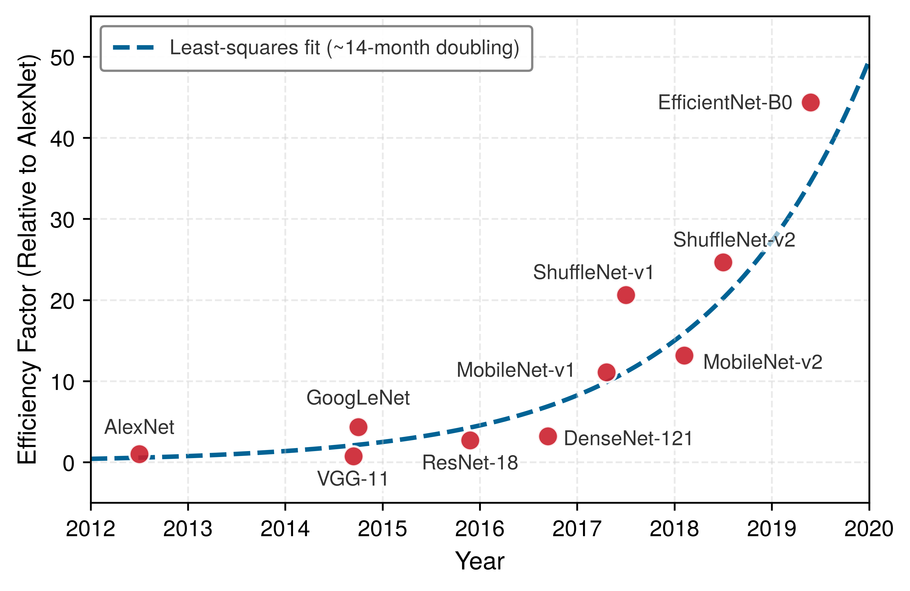
Введение
Содержание главы
Содержание
- 1 Момент ИИ-систем
- 2 От логики, заданной кодом, к поведению, заданному данными
- 3 Эволюция узких мест в ИИ
- 4 Горький урок
- 5 Определение МЛ-систем
- 6 Когда МЛ-системы выходят из строя незаметно
- 7 Железный закон МЛ-систем
- 8 Три измерения эффективности машинного обучения
- 9 Инженерия ИИ как дисциплина
- 10 Организация книги
- 11 Заблуждения и ловушки
- 12 Итоги
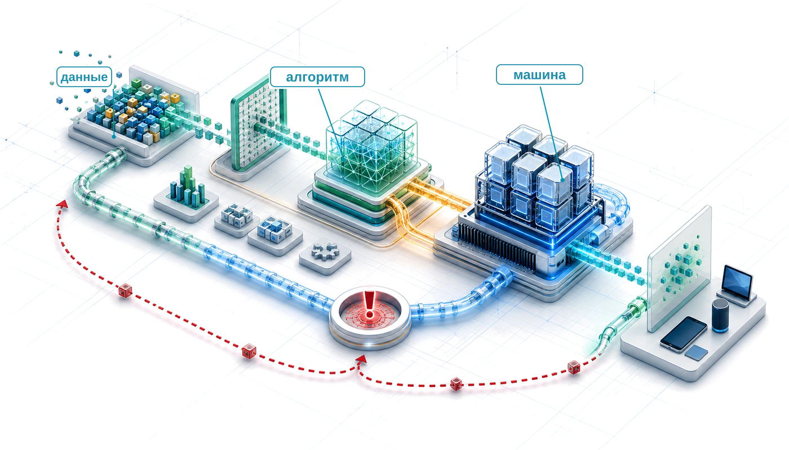
Назначение
Почему проектирование системы машинного обучения требует принципиально иных принципов, чем построение обычного программного обеспечения?
У систем машинного обучения есть своя физика. Данные перемещаются через иерархии памяти, ограниченные пропускной способностью, арифметика исполняется на кремнии, ограниченном энергопотреблением, а предсказания должны приходить в строгие окна задержки (latency). Обычное программное обеспечение часто может считать такие ограничения деталями реализации, но в МЛ-системах они определяют, что вообще способно работать. Перемещение операнда из основной памяти может стоить куда больше энергии, чем арифметическая операция над ним, а предсказание, опоздавшее на несколько сотен миллисекунд, может не стоить ничего для реального процесса, который его ждёт. Архитектура, комфортно размещающаяся в дата-центре, бесполезна на мобильном телефоне, а обучающий конвейер, сходящийся за дни на высокоскоростных ускорителях, может буксовать неделями на стандартном железе. Эти системы отличаются от обычного программного обеспечения и тем, что их поведение определяется эмпирическими данными, а не только явной логикой. Когда обычная программа ведёт себя некорректно, она обычно падает или выбрасывает исключение. Когда МЛ-система ведёт себя некорректно, среда исполнения может работать безупречно, в то время как выученные предсказания ошибаются из-за того, что входы изменились со времён обучения или обучающие данные были нерепрезентативными. Ни одно утверждение не нарушается и ни одно исключение не выбрасывается; единственный симптом — худшие решения, обнаруживаемые неделями позже через потерянную выручку или подорванную безопасность. Тестирование, контроль версий и профилирование остаются необходимыми, но становятся недостаточными. Успешный программный тест устанавливает лишь то, что его проверки выполнялись для протестированных входов и исполнения. Выученное предсказательное поведение требует также валидации на репрезентативных данных из постоянно меняющегося мира, и эти доказательства статистичны и никогда не окончательны. Оптимизация одного компонента в изоляции тем временем часто лишь перемещает узкое место на другой уровень стека. Поэтому данные, алгоритм и машина (D·A·M) должны проектироваться вместе как одна задача.
Цели обучения
- Объяснить, почему поведение, заданное данными, позволяет предсказательному качеству снижаться, тогда как код модели и её исполнение остаются неизменными
- Анализировать, когда масштабируемый поиск и обучение могут извлечь пользу из дополнительных вычислений в рамках ограничений данных и машины
- Применять призму «данные–алгоритм–машина» для диагностики узкого места системы и его переоценки после вмешательства
- Вычислять время исполнения по «железному закону» и оценивать, как улучшение компонента меняет сквозное время
- Сравнивать алгоритмическую, вычислительную эффективность и эффективность отбора данных по тому члену «железного закона», который они меняют, и по точности, получаемой на единицу добавленной стоимости
- Оценивать, удовлетворяют ли предсказательное качество и потребление ресурсов требованиям развёртывания, используя оценку и мониторинг жизненного цикла
1 Момент ИИ-систем
Устный вопрос голосовому ассистенту смартфона запускает цепочку выученных компонентов. Одна модель преобразует аудио в текст, другая выводит, чего хочет пользователь, сервис поиска собирает релевантную информацию, а генеративная модель составляет ответ — всё это за несколько секунд и через телефон, сеть и дата-центр. Каждый этап работает в рамках собственного бюджета памяти, задержки и энергии, и задержка или ошибка на любом этапе доходит до пользователя. Та же структура проходит через поисковые системы, ранжирующие результаты, рекомендательные системы, решающие, что видят люди, кредитные модели, оценивающие риск, и системы помощи водителю, обнаруживающие опасности. В каждом случае предсказание питает более крупное решение, способное повлиять на внимание, деньги, доступ или безопасность, а модель — лишь один компонент системы, которая должна надёжно доставить это решение.
Современные системы ИИ стали практически применимыми, когда сошлись три силы: цифровые службы породили большие наборы данных, обучающие алгоритмы извлекли из этих примеров предсказательную структуру, а параллельное железо сделало итоговые вычисления осуществимыми. Но самым важным изменением было концептуальным. Данные перестали быть просто входом для программного обеспечения; они стали механизмом, определяющим поведение программы. Вместо ручного кодирования каждого правила принятия решений инженеры строят процесс обучения, через который примеры формируют поведение, выучиваемое системой.
Эта конвергенция создаёт двойной мандат. Каждая МЛ-система должна установить, что её выученное поведение заслуживает доверия и что машина может произвести это поведение в рамках доступного времени, памяти, энергии и стоимости. Модель, точная, но слишком медленная, непригодна; быстрая модель, обученная на нерепрезентативных данных, неверна на скорости машины. В масштабе оба обязательства охватывают весь стек. Разговорные службы координируют пулы GPU1, попутно управляя памятью, сетями и охлаждением. Системы помощи водителю должны сливать сенсорные потоки за миллисекунды. Поисковый сервис, обрабатывающий более 13.7B запросов в день (Srinivasan 2025 г.), должен также выполнять строгие целевые показатели задержки. Эти системы добиваются успеха только тогда, когда выученное поведение и физическое исполнение проектируются вместе.
Чтобы установить эту дисциплину, глава сначала прослеживает, как программное обеспечение перешло от рукописных правил к поведению, выученному из данных, и как четыре исторических узких места выдвинули вычисления в центр. Затем она определяет таксономию «данные–алгоритм–машина» (D·A·M), диагностирующую современные МЛ-системы, и формализует три количественных соотношения, управляющих инженерией ИИ (уравнение деградации для безмолвной потери качества, железный закон исполнения и отдачу от вычислений).
2 От логики, заданной кодом, к поведению, заданному данными
В традиционной программной инженерии программист кодирует предметную логику прямо в исходный код: налоговый калькулятор применяет установленные законом ставки строка за строкой, а ранний почтовый фильтр блокирует сообщения, совпадающие со списком запрещённых ключевых слов. Такой подход на основе правил работает, когда спецификация замкнута, но ломается, как только атакующие перефразируют свои сообщения или маскируют триггерные слова быстрее, чем инженеры успевают латать правила. Вместо ручного кодирования этих правил принятия решений МЛ-команда сопоставляет исторические письма с бинарными метками спама и запускает процедуру оптимизации, которая подстраивает миллионы числовых весов2 до тех пор, пока предсказания модели не совпадут с метками.
Андрей Карпаты3 описал этот переход от логики, заданной кодом, к поведению, заданному данными, как сдвиг от Software 1.0 к Software 2.0 (Karpathy 2017 г.). В Software 1.0 инструкции пишут люди; в Software 2.0 процедура обучения подстраивает веса модели, пока её выходы не совпадут с примерами (Таблица 1). Обычно это стохастический градиентный спуск, который маленькими шагами подталкивает веса к предсказаниям, совпадающим с метками. Затем инференс4 применяет обученные веса к новым сообщениям с неизвестными метками, а отдельный тестовый набор, отложенный от обучения, проверяет, работает ли модель и на примерах, которых она никогда не видела.
Software 2.0 не устраняет традиционную программную инженерию. Инженеры всё ещё пишут код сбора и подготовки данных, программу, запускающую обучение, и сервисы, доставляющие предсказания пользователям. Однако сами решения больше не живут в человекочитаемом потоке управления. Они живут в миллионах числовых весов, сформированных данными, поэтому статический анализ и ручная проверка кода не могут показать, что система решит для нового входа. Выученные системы добавляют особый режим отказа, при котором предсказательная точность падает безмолвно, даже когда исходный код, компилированные бинарники и среды исполнения остаются неизменными.
| Признак | Software 1.0 (традиционный) | Software 2.0 (машинное обучение) |
|---|---|---|
| Исходный код | C++, Python, Java | Выученные веса, сформированные обучающими данными |
| Компилятор | GCC, LLVM | Цикл обучения (стохастический градиентный спуск) |
| Логика | Явная (закодирована вручную) | Неявная (выученная) |
| Режим отказа | Падения или безмолвные логические ошибки | А также статистическая потеря качества |
| Отладка | Трассировка исполнения и входов | А также инспекция данных и выученного поведения |
Смещённый к данным рабочий процесс меняет то, что инженеры должны строить и поддерживать. Скалли и коллеги описали, как код модели занимает лишь малую долю производственной МЛ-системы (Sculley и др. 2015 г.). Окружающая система включает сбор данных, верификацию, извлечение признаков, управление ресурсами, обслуживание и мониторинг — каждый со своими обязательствами по сопровождению.
Производственная работа в МЛ — это по большей части окружающая система, а не только код модели.
Этот дисбаланс создаёт скрытый технический долг — накапливающуюся стоимость сопровождения недокументированных зависимостей и хрупкой инфраструктуры вокруг модели. Каждый окружающий компонент кодирует допущения о том, как сэмплируется пример, что означает метка, когда вычисляется признак, какая версия попадает в обслуживание и как обнаруживается деградация. Ни одно из этих допущений не появляется в матричном умножении, производящем предсказание, но любое из них может изменить результат. Улучшение одной модели не может починить измерение, которое больше не отслеживает свою цель, сломанный конвейер признаков или отсутствующий сигнал обратной связи.
Поэтому производственные данные — не пассивный вход. Это измерение мира, собранное через конкретный продукт и преобразованное меняющимся конвейером. Если это измерение перестаёт представлять намеченную цель, модель может оставаться численно здоровой, пока система становится неверной. Google Flu Trends обладал огромным и своевременным потоком поисковых данных, но смысл этих данных изменился под моделью.
Практический случай 1.1: Когда журналы поиска приняли внимание за болезнь (2013)
Контекст: Google Flu Trends (GFT) оценивал активность гриппа по паттернам агрегированных поисковых запросов (Ginsberg и др. 2009 г.; Lazer и др. 2014 г.). Его привлекательность была в скорости и масштабе, с которыми приходили поисковые запросы по сравнению с клиническими отчётами. Если люди искали симптомы гриппа, заболевая, объём запросов выглядел своевременной прокси-величиной, то есть косвенным измерением, для заражения.
Режим отказа: Прокси не была стабильной. Новостные материалы могли менять то, что люди ищут, а автодополнение — то, как они формулируют запросы. Объём запросов мог отражать, следовательно, общественное внимание и поведение продукта наряду с болезнью. В сезоне 2012–2013 годов GFT оценивал примерно вдвое большую, чем сообщал CDC, долю обращений к врачам с симптомами, похожими на грипп, и с августа 2011 года завышал оценку в 100 из 108 недель.
Урок для систем: Средством не был больший набор поисковых данных или лучше настроенная модель. Исследователи объединили поисковые сигналы с «часовыми» клиническими данными американских Центров по контролю и профилактике заболеваний (CDC) и со временем перекалибровали соотношение. Объём данных — не истина в последней инстанции. Поведенческой прокси нужен контур обратной связи с доверенным измерением и постоянные доказательства того, что прокси всё ещё представляет ту величину, которую система заявляет оценивать.
В Google Flu Trends предсказательное качество деградировало, пока программное обеспечение продолжало работать, потому что изменились и распределение входов (виды входов и частота их появления), и соотношение между прокси и её целью. Код остался прежним, поэтому изменение поведения пришло из данных. Принцип «данные как код» называет это свойство. Обучающие данные не просто входят в фиксированную программу; они помогают определить операционную логику, которую реализует модель. Инженеры всё ещё пишут процедуру оптимизации, но примеры формируют веса модели через стохастический градиентный спуск5 и родственные методы. Изменение набора данных может, следовательно, изменить поведение системы так же наверняка, как изменение исходного кода.
Если данные определяют поведение, то улучшение данных — прямой путь улучшить систему. Поведение, заданное данными, — свойство машинного обучения; data-centric ИИ — стратегия разработки, трактующая улучшение данных как явный путь к лучшим предсказаниям (Ng 2021 г.).
Поведение, заданное данными, добавляет обязательство тестирования: оценивать предсказательное качество по популяции входов, с которыми система столкнётся. Обычное программное обеспечение тоже может иметь слишком большие для перечисления пространства входов, так что исчерпывающее тестирование не является реалистичным ожиданием ни для одного из типов систем. Разница — в том, что устанавливает успешный тест. Проверка модульного теста проверяет заданное условие для протестированного входа и состояния, тогда как утверждение о предсказательном качестве описывает агрегированную производительность по популяции, которая может меняться во времени.
В соревновании ImageNet 2012 года решающая победа AlexNet6 помогла запустить эпоху глубокого обучения, однако бенчмарк мог оценить лишь исчезающе малую долю входов, которые модель могла встретить. Каждый вход — это RGB-изображение
Это расхождение не делает оценку тщетной; оно меняет то, что может установить тестирование. Оценка до развёртывания даёт статистические доказательства по сэмплированным входам, а непрерывный производственный мониторинг проверяет, продолжает ли операционная популяция и наблюдаемые результаты поддерживать этот эмпирический базис. Статистическая уверенность заменяет любое ожидание исчерпывающего доказательства. Бенчмаркинг и главы о развёртывании возвращаются к этому разрыву и ограничивают его статистически по заданной операционной популяции.
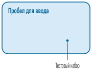
Покрытие тестами — исчезающе малая доля пространства входов.
Поскольку утверждение машинного обучения статистично, а его популяция постоянно движется, устойчивость не может означать иммунитет к изменениям. Она означает оснащение системы средствами обнаружения момента, когда производственные доказательства больше не поддерживают модель, и действия по этим доказательствам.
Отладка МЛ-системы, следовательно, начинается с инспекции наборов данных и преобразований конвейера, а не только с трассировки стеков вызовов Python. Контроль версий должен фиксировать снимки наборов данных и конфигурации признаков наряду с коммитами исходного кода, а оценочные среды должны измерять статистические сдвиги распределений и исходы подгрупп, а не покрытие ветвей. Эти практики устанавливают воспроизводимость и происхождение (provenance), хотя и не могут превратить эмпирическую выборку в формальную верификацию.
↪ Версионирование обучающих наборов данных, чтобы модель можно было воспроизвести и проследить до её входов, развивается в Версионирование данных для воспроизводимости ML.
Контрольная точка 1.1: Смена парадигмы
Прежде чем проследить историю ИИ, проверьте своё понимание смены парадигмы в построении программного обеспечения:
Выучивание поведения из данных может казаться неизбежным задним числом, но его принятие отражает и пределы масштабирования более ранних подходов. Многие системы ИИ пытались запрограммировать интеллект напрямую через рукотворные символы и правила. Чтение этой истории через системную призму выявляет повторяющиеся ограничивающие факторы — те пределы, снятие которых сильнее всего улучшило бы всю систему: логику, приобретение знаний, проектирование признаков и физическую инфраструктуру, которую изучает остальная часть этой книги.
3 Эволюция узких мест в ИИ
Когда Алан Тьюринг7 предложил оценивать машинный интеллект по наблюдаемым откликам (Turing 1950 г.), вычислительная техника имела мало памяти и вычислительной мощности, и каждая ранняя попытка построить разумное поведение упиралась в структурный потолок. Ранние исследователи шли двумя контрастными путями: перцептрон Фрэнка Розенблатта (1958) (Rosenblatt 1958 г.) пытался выучить веса напрямую из сенсорных входов, тогда как ELIZA Джозефа Вейценбаума8 (Weizenbaum 1966 г.) исполняла закодированные вручную подстановки паттернов. Оба вскоре упёрлись в жёсткие пределы. Однослойный перцептрон мог разделять категории входов, например два вида изображений, лишь проведением прямой линии (или плоской плоскости) между ними (Minsky и Papert 1969 г.), а практические методы обучения более глубоких сетей оставались недостижимыми. Скрипты ELIZA ломались всякий раз, когда входы выходили за их рукописные шаблоны. В последующие десятилетия четыре перекрывающиеся эры (символьный ИИ, экспертные системы, статистическое обучение и глубокое обучение) каждая снимала одно ограничение, лишь чтобы обнажить следующее.
Рисунок 1 прослеживает внимание к ИИ по семи десятилетиям опубликованной литературы и оттеняет два интервала «зим ИИ» (1974–1980 и 1987–1993), отмеченных сокращением финансирования и неоправданными ожиданиями.9 Эти спады отражали повторяющиеся разрывы между обещанной общностью и тем, что современные алгоритмы, наборы данных и железо могли реально поддержать.
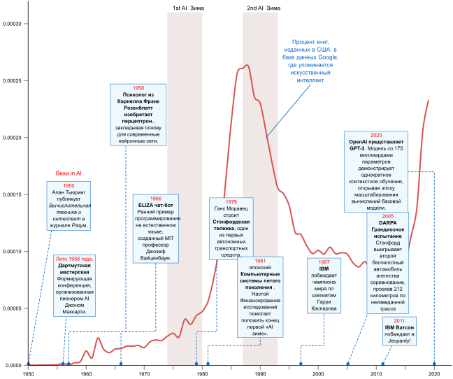
3.1 Подходы на основе правил: узкие места логики и знаний
Прежде чем обучение на данных стало практичным, инженеры стремились конструировать разумное поведение так же, как они строили обычное программное обеспечение: записывая явные правила. Это усилие развернулось двумя волнами, двигаясь от формального рассуждения общего назначения к узко очерченной предметной экспертизе.
Эра символьного ИИ и узкое место логики
В 1964 году программа STUDENT10 Дэниела Боброу (Bobrow 1964 г.) продемонстрировала, что компьютер может решать школьные алгебраические задачи в текстовой форме, переводя английские предложения в алгебраические уравнения. STUDENT олицетворял символьный ИИ (1950-е–1970-е), который представлял знание и рассуждение через явные символы и правила преобразования. Этот подход восходил к Дартмутской конференции 1956 года11 (McCarthy и др. 1955 г.), организаторы которой предположили, что интеллект можно описать достаточно точно, чтобы машина могла его симулировать.
В те же годы появилась конкурирующая идея. В 1959 году Артур Самуэль в IBM показал, что программа для шашек может улучшаться через игру с самой собой, и ввёл термин машинное обучение для программ, которые улучшаются с опытом, а не путём явного программирования (Samuel 1959 г.). Тем не менее символьные манипуляции оставались доминирующим подходом.
Символьные системы могли выдавать впечатляющие демонстрации, но были операционно хрупкими. Их успех зависел от вручную закодированных правил, отображающих каждую приемлемую форму входа в символьное представление. STUDENT мог решить алгебраическую задачу после перевода английского в уравнения, но малое изменение формулировки могло этому переводу помешать. Эта хрупкость — узкое место логики символьной эры, поскольку правила общего назначения не могли предвидеть открытую вариативность реальных входов. Восприятие и движение оказались ещё труднее для захвата правилами, чем язык.12
Пример 1.1: STUDENT (1964)
STUDENT разделял интерпретацию языка и алгебру:
language "Two numbers sum to 30; one is twice the other."
parse x + y = 30, x = 2y
solve x = 20, y = 10Когда уравнения записаны, решение — рутина. Узким местом был перевод. Для каждой незнакомой формулировки требовалось новое рукописное правило, так что языковое покрытие росло лишь так же быстро, как база правил.
Эра экспертных систем и узкое место знаний
Когда символические правила общего назначения оказались слишком хрупкими для открытых миров, инженеры эры экспертных систем сузили охват до специализированных профессиональных доменов. MYCIN, построенная в Стэнфорде в 1970-х для диагностики бактериальных инфекций крови и рекомендации антибиотиков, кодировала клиническую экспертизу напрямую в виде продукционных правил «если–то» (Shortliffe и др. 1975 г.).
Пример 1.2: MYCIN (1975)
MYCIN делала своё рассуждение явным. Факты о пациенте запускали читаемые продукционные правила:
facts stain=gram-positive, shape=coccus, arrangement=clumps
rule IF facts match THEN organism=staphylococcus (certainty=0.7)
cycle match facts -> fire rule -> update certainty -> repeatИнференс-движок — это программа, применяющая правила к известным фактам; это более старое, основанное на логике значение слова «инференс», чем применение обученной модели. Движок MYCIN повторял этот цикл «сопоставь-и-запусти» по сотням правил и распространял коэффициенты уверенности (числовые веса доверия) к диагнозу. Врач мог инспектировать каждый шаг, но покрытие всё равно росло по одному правилу за раз: каждое исключение нужно было выявить, закодировать и согласовать с существующей базой правил.
MYCIN показывала хорошие результаты в конкретных тестах, но её успех выявил узкое место приобретения знаний.13 Проблемой было уже не то, может ли правило выразить экспертизу, а то, как неявное суждение попадает в систему и остаётся согласованным по мере роста базы правил.
Более быстрые машины могли запускать правила быстрее, но скорость процессора не могла ускорить извлечение и поддержку человеческой экспертизы. Масштабирование вместо этого требовало выучить границу решений — линию, которую классификатор проводит между категориями, такими как спам и легитимная почта, — из примеров, а не просить специалистов перечислить каждый случай. Этот переход не устранил человеческое проектирование; он переместил инженерное усилие. Вместо ручного кодирования логики решений инженеры теперь курируют наборы данных, выбирают способ представления входов и выбирают меру ошибки, которую обучение должно уменьшать. Следующая эра обменяла узкое место приобретения знаний на новое — ручное проектирование признаков, извлекаемых из сырых данных.
3.2 Эра статистического обучения и узкое место инженерии признаков
В 1990-е годы статистическое обучение заменило вручную составленные базы правил параметрами, оцениваемыми по размеченным примерам. Вместо того чтобы следовать жёстко заданной логике, система оценивала вероятности по данным — например, вероятность метки
Пример 1.3: Системы раннего обнаружения спама
Статистические фильтры перенесли решение с вручную написанного правила на вероятность, оценённую по размеченным сообщениям:
rules: if "free" or "winner" appears -> spam
learn: labeled email -> word likelihoods -> Pr(spam | email)Сопровождение не исчезло. Оно сместилось от редактирования списков ключевых слов к курированию репрезентативных примеров и проверке того, отслеживают ли ещё выученные вероятности актуальную почту.
Обучение границы решения по данным сократило один источник ручного труда, но обнажило другой. Многие статистические классификаторы полагались на инженеров в преобразовании сырых входов в признаки — измеримые свойства вроде счётчиков слов или краёв изображения. В компьютерном зрении инженеры проектировали извлекатели признаков, такие как SIFT (Scale-Invariant Feature Transform) (Lowe 1999 г.) и HOG (Histogram of Oriented Gradients) (Dalal и Triggs 2005 г.), чтобы суммировать локальные структуры изображения. Классификаторы вроде машин опорных векторов (SVM) (Cortes и Vapnik 1995 г.) затем обучали границы решения по этим признакам. Обучающийся алгоритм подстраивал границу; инженеры решали, какие свидетельства он увидит. Расширение системы на новую задачу часто означало пересборку всего предобрабатывающего стека — отсюда узкое место инженерии признаков.
Этот гибридный подход сочетал инженерные признаки со статистическим обучением. Алгоритм Виолы–Джонса15 (Viola и Jones 2001 г.), типичный для этой эпохи, обеспечивал детекцию фронтальных лиц в реальном времени с помощью простых прямоугольных признаков и каскадов классификаторов. Он показал, что хорошо спроектированные признаки способны обеспечить практичные приложения с низкой задержкой, — но лишь в узких областях, где эксперты могли вручную создать подходящие представления. Обычный конвейер компьютерного зрения делает этот ручной труд видимым: несколько изготовленных вручную этапов предшествуют самому обучению.
Пример 1.4: Традиционный конвейер компьютерного зрения
Обычная система компьютерного зрения разделяла представление и классификацию:
image -> resize -> HOG/SIFT features -> SVM -> labelПереход от лиц к пешеходам или другой области означал перепроектирование извлекателя признаков, а часто и всего предобрабатывающего стека.
3.3 Эра глубокого обучения и узкое место инфраструктуры
Переделывать изготовленные вручную извлекатели признаков под каждую новую область было не масштабируемо, поэтому глубокое обучение (LeCun и др. 2015 г.) перенесло извлечение признаков внутрь самой модели. Нейронная сеть вычисляет послойно — этапами арифметики над обучаемыми весами, где каждый слой преобразует выход предыдущего. Вместо признаков, спроектированных человеком, глубокие сети с множеством таких слоёв обучали представления непосредственно по сырым входам вроде пикселей и звуковых волн. Процесс обучения теперь мог формировать и представление, и границу решения, открывая «сквозное» (end-to-end) обучение.
Прорыв не был только алгоритмическим. Свёрточные нейронные сети (CNN), чьи свёрточные слои скользят небольшими обучаемыми шаблонами весов — фильтрами — по изображению, обнаруживая один и тот же признак в каждой позиции, существовали и раньше (LeCun и др. 1989 г., 1998 г.). AlexNet добавил сопряжение архитектуры и обучения с совместным проектированием систем: модель, процедуру обучения и отображение на оборудование выбирали вместе (Krizhevsky и др. 2012 г.). Его параллельные матричные операции совпадали с возможностями GPU. С 60 million параметрами, распределёнными по двум GTX 580 (Рисунок 2), AlexNet достиг ошибки top-5 в 15.3 percent — относительного улучшения в 41.6 percent по сравнению со следующим лучшим результатом того года.
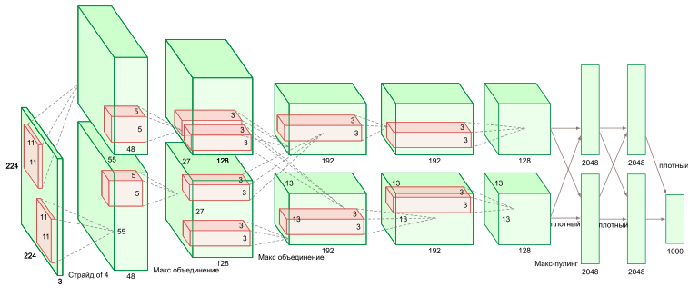
Оборудование по-прежнему определяло границы обучаемого. В 2012 году хранение 32-битных параметров AlexNet (60 million) требовало около 240 MB — легко помещалось в одну карту. Но обучению нужно больше памяти, чем только хранение весов: оно держит промежуточные результаты каждого слоя и служебные данные для корректировки каждого параметра (подробно — в Нейронные вычисления). Эта рабочая память растёт с числом изображений, обрабатываемых совместно. Каждый GTX 580 offering имел лишь 3 GB видеопамяти (VRAM), и в оригинальной статье отмечено, что из-за этого лимита сеть было слишком велико обучать на одной карте (Krizhevsky и др. 2012 г.). Поэтому AlexNet разделил слои между двумя GPU-потоками, обменивавшимися промежуточными результатами только на избранных слоях, ограничивая трафик по шине PCIe — универсальной периферийной шине хоста. Структура модели и организация машины проектировались вместе. Этот ранний параллелизм по модели предвосхитил современное обучение на нескольких GPU. Глубокое обучение снизило потребность в ручных признаках, но переместило ограничивающее условие на инфраструктуру хранения данных, перемещения параметров и координации вычислений.
↪ Параллелизм по модели — разбиение модели по ускорителям, когда она перерастает память одного устройства, как при двух-GPU разбиении AlexNet, — подробно в Параллелизм по модели.
Этот сдвиг породил узкое место инфраструктуры: физический объём памяти, пропускная способность соединений и оркестрация оборудования диктуют границы того, чему могут научиться модели. Через восемь лет после AlexNet GPT-3 (Generative Pre-trained Transformer 3) с 175 billion параметрами обучалась примерно на 300 billion токенах (фрагментов слов, которые языковая модель читает и предсказывает), отобранных из фильтрованного веб-текста, книг и Википедии (Brown и др. 2020 г.).
Обучение в таком масштабе требует предсказуемого объёма арифметики. GPT-3 — плотная (dense) модель, в которой каждый параметр участвует в обработке каждого токена. Для таких моделей приближение плотного обучения (Kaplan и др. 2020 г.) оценивает
↪ Приближение плотного обучения, использованное для этого подсчёта операций, выводится в Сквозные примеры: GPT-2 XL и ResNet-50.
Самое трудное сместилось от проектирования детекторов краёв к тому, чтобы удерживать согласованный парк — 10,000 accelerators — работающим параллельно через высокоскоростные сети без сбоев, останавливающих обучение на полпути. Через призму систем этот переход каждый раз обменивал одно ограничивающее условие на следующее — сначала в человеческом труде (правила, знания, признаки), затем в физической инфраструктуре (Таблица 2). Снятие одного предела обнажало следующий — этот паттерн книга называет миграцией узких мест.
| Аспект | Символьный ИИ | Экспертные системы | Статистическое обучение | Глубокое обучение |
|---|---|---|---|---|
| Сильная сторона | Логический вывод | Экспертиза предметной области | Универсальность | Распознавание образов |
| Узкое место | Хрупкость (правила ломаются) | Получение знаний (эксперты редки) | Инженерия признаков (ручная предобработка) | Инфраструктура (масштаб вычислений и данных) |
| Работа с данными | Минимум данных | Основано на знаниях экспертов | Нужны умеренные данные | Обработка массовых данных |
На протяжении четырёх эпох инженерные усилия смещались от ручного составления предметных эвристик к построению масштабируемых вычислительных и информационных конвейеров. «Горький урок» объясняет, почему этот сдвиг повторялся.
4 Горький урок
Экспертные системы вкладывали инженерные усилия в кодирование знаний о предметной области; системы глубокого обучения вкладывают значительную часть этих усилий в обучение на данных в большом масштабе. «Горький урок» отражает историческое преимущество общих методов, прежде всего поиска и обучения, которые способны эффективно использовать растущие вычислительные мощности. Ричард Саттон16 сформулировал этот вывод в эссе 2019 года «The Bitter Lesson» (Sutton 2019 г.). Саттон писал: «Самый главный урок, который можно извлечь из 70 лет исследований в области ИИ, состоит в том, что общие методы, использующие вычисления, в конечном счёте оказываются наиболее эффективными, причём с большим отрывом».
Если побеждают общие методы за счёт большего объёма вычислений, то именно объём вычислений, использованный в каждую эпоху, становится величиной, за которой следует следить. На переднем крае этот объём часто выражают в ускоритель-днях (GPU-днях, когда ускорителем является GPU): один эталонный ускоритель, непрерывно работающий в течение 24 часов. Таблица 3 сопоставляет характерные вехи бенчмарков с соответствующим аппаратным обеспечением. Его последний столбец охватывает диапазон от обучения на CPU до кластеров из тысяч ускорителей, используя 2.5 million reference GPU-days как оценочный ориентир обучения на переднем крае (Patel и Wong 2023 г.).
| Эпоха | Подход | Характерная задача | Производительность | Вычислительные ресурсы |
|---|---|---|---|---|
| Статистическое ML (1990-е–2000-е) | Инженерия признаков + обучение | Распознавание рукописных цифр | около 98–99% на бенчмарках эпохи MNIST (LeCun и др. 1998 г.) | Конвейеры признаков эпохи CPU; ресурсы зависели от реализации |
| Глубокое обучение (2012) | Сквозные нейронные сети | ImageNet top-5 accuracy | 84.7% (AlexNet) | 6 дней на 2 GPU |
| Современное глубокое обучение (2020+) | Крупномасштабные трансформеры (Vaswani и др. 2017 г.) | ImageNet top-1 accuracy | 88.55% (ViT-H/14) (Dosovitskiy и др. 2021 г.) | Крупномасштабное предобучение на Tensor Processing Unit (TPU) |
| Современное глубокое обучение (2023) | Фундаментальные модели | Бенчмарк MMLU | 86.4% (GPT-4) (OpenAI и др. 2023 г.) | Оценочно ~2.5 million reference GPU-days (порядка 25,000 эталонных GPU, работающих 100 days) (Patel и Wong 2023 г.) |
Распознавание цифр, классификация ImageNet и Massive Multitask Language Understanding (MMLU) измеряют разные способности по разным метрикам, поэтому Таблица 3 не сравнивает методы на одной задаче. Таблица показывает скорее то, что каждый новый порог способности требовал на порядки больше аппаратных ресурсов — от однопроцессорных CPU-программ до многомегаваттных кластеров ускорителей. Проверка урока Саттона — превосходят ли общие методы, опирающиеся на сырую вычислительную мощность, представления, созданные вручную, — требует фиксировать задачу и сравнивать конкурирующие подходы внутри одной предметной области.
Игры разделяют роли поиска и обучения. В шахматах Deep Blue компании IBM17 победил чемпиона мира Гарри Каспарова в 1997 году, сочетая специализированное шахматное аппаратное обеспечение, широкомасштабный поиск и шахматно-специфические знания для оценки позиций. В го AlphaGo компании DeepMind обучалась на партиях экспертов и самоигре, используя нейронные сети для управления поиском по дереву, но всё ещё применяла некоторые engineered-признаки на входе (Silver и др. 2016 г.). AlphaGo Zero18 представляет более наглядный пример урока Саттона: он обучился через самоигру без записей человеческих партий и без таких признаков, созданных вручную (Silver и др. 2017 г.). Прогресс зависел от методов, способных превращать вычисления в улучшение игры, а не просто от более быстрой машины.
Урок назван «горьким», потому что кодирование человеческой экспертизы может казаться самым прямым путём к решению. Примеры Саттона показывают, как масштабируемые поиск и обучение вновь и вновь обгоняли такие подходы. Большее количество вычислений не гарантирует лучших результатов: метод должен использовать их продуктивно, а данные и целевая функция должны поддерживать поставленную задачу.
Обучение в масштабе само по себе является инженерной задачей. Современные языковые модели, такие как GPT-4 (OpenAI и др. 2023 г.), и генераторы изображений, такие как DALL-E (Ramesh и др. 2021 г.), усваивают большую часть своего поведения из больших наборов данных, а не из явных лингвистических или художественных правил. Одно лишь обучение GPT-3, по оценкам, потребило около 1.3 GWh энергии19 (Patterson и др. 2021 г.), а обслуживание этих моделей миллионам пользователей превращает инференс в непрерывную задачу энергоснабжения, охлаждения и планирования ёмкости дата-центра.
Когда способность модели масштабируется вместе с сырой вычислительной мощностью, ограничивающие факторы смещаются к физической инфраструктуре: пропускной способности памяти,20 задержке интерконнектов, отводу тепла и пропускной способности конвейера данных. Поэтому перемещение данных, темп арифметических операций и эксплуатационная надёжность должны проектироваться как единая задача. Таким образом, горький урок объясняет направление миграции узкого места, прослеживаемое в истории: как только общие методы превращают вычисления в способность, ограничение смещается с закодированных человеческих знаний на машину.
5 Определение МЛ-систем
Для усвоения вычислительного роста нужна работающая система, а не только обученная модель. Вернёмся к спам-фильтру для электронной почты, представленному в Глава 2: в ноутбуке это классификатор, отображающий текст сообщения в вероятность спама, но в продакшене он должен обрабатывать глобальный почтовый трафик, измеряемый сотнями миллиардов сообщений в день (Statista Research Department 2024 г.). В таком масштабе классификатор — лишь один компонент внутри сквозного эксплуатационного конвейера, который должен непрерывно принимать новые примеры, дообучаться по мере эволюции тактик атак и классифицировать входящую почту в рамках жёстких бюджетов задержки доставки.
Задача начинается с данных. Фильтр обучается на размеченных примерах и нуждается в обновляемых обучающих данных и периодическом переобучении по мере изменения спамерских тактик. Это также алгоритмическая задача, поскольку модель должна обобщать с этих примеров на сообщения, которые она никогда прежде не видела. Обобщение оценивают две меры. Точность (precision) измеряет долю помеченных сообщений, которые действительно являются спамом; полнота (recall) — долю всех спам-сообщений, которые ловит фильтр. Помечая больше сообщений, можно поймать больше спама, но при этом скрыть легитимную почту, поэтому система должна оценивать оба последствия. Наконец, это задача инфраструктуры. Провайдеры должны обрабатывать входящий трафик, хранить и обновлять модели и возвращать предсказания в пределах бюджета задержки доставки. Следовательно, классификатор — лишь один компонент развивающейся системы из данных, программного и аппаратного обеспечения.
Когда появляется новый шаблон фишинга, слой данных должен зафиксировать репрезентативные сообщения, алгоритм должен научиться отделять атаки от легитимной почты, а инфраструктура должна развернуть и обслуживать обновлённую модель. Любой слой может выйти из строя, пока остальные продолжают работать. Поэтому полная цепочка — от измерения через обучение к исполнению — и есть правильная единица анализа.
Определение 1.1: Системы машинного обучения
Системы машинного обучения объединяют модели, обучающиеся на данных, с программным и аппаратным обеспечением, необходимым для их обучения, развёртывания и сопровождения. Их производительность зависит совместно от качества данных, выбора алгоритма и вычислительной мощности машины.
- Значимость: Требования носят сквозной характер, поэтому сбой в любом слое меняет наблюдаемый пользователем результат, даже если остальные слои работают корректно.
- Отличие: Система включает весь путь, который проходит вход, а не только модель. Признак, вычисляемый одним способом при обучении и другим при обслуживании, меняет предсказания системы, даже когда модель и её веса идентичны.
- Типичная ошибка: Модель — не система, как уже показала малая доля кода модели в описании продакшен-систем у Скали. Конвейеры данных, преобразования признаков, инфраструктура обслуживания, мониторинг и петли обратной связи окружают обученные параметры и часто составляют основную инженерную нагрузку; там же, на интерфейсах, которые не покрывают тесты ни одного отдельного компонента, обычно возникают самые дорогие сбои (Sculley и др. 2015 г.).
Определение выявляет три диагностические оси: данные, описывающие задачу; алгоритм, превращающий примеры в поведение; и машина — инфраструктура, исполняющая это поведение в рамках эксплуатационного бюджета. Один и тот же наблюдаемый пользователем симптом может возникать в любой из трёх. Считать каждый промах проблемой модели — риск улучшать не тот компонент. Таксономия D·A·M разделяет эти причины для диагностики.
Определение 1.2: Таксономия D·A·M
Таксономия D·A·M — диагностический фреймворк для анализа узких мест систем машинного обучения по трём осям. Данные определяют, какие примеры и байты система должна обрабатывать; Алгоритм определяет структуру модели и объём работы, необходимой для обучения или предсказания; Машина определяет доступную аппаратную мощность для исполнения этой работы. Цель — выявить, какая ось является ограничивающим фактором.
- Значимость: Диагностическая сила конкретна ещё до появления детальной аппаратной арифметики. Если спам-фильтр пропускает новую фишинговую кампанию, потому что в обучающем наборе никогда не было такой тактики, ограничивающая ось — Данные. Если обучающие примеры адекватны, но модель не может выразить закономерность, ограничивающая ось — Алгоритм. Если и то и другое адекватно, но сервис не успевает классифицировать сообщения во время всплеска трафика, ограничивающая ось — Машина. Количественная диагностика начинается с вопроса: какая ось ограничивает систему.
- Отличие: Таксономия D·A·M связывает предсказательное качество с физическим исполнением. Выбор алгоритма формирует как данные, необходимые для обучения полезного поведения, так и машинные ресурсы, необходимые для его исполнения. Эти требования зависят от задачи и процедуры обучения, поэтому размер модели сам по себе не определяет ни обобщение, ни среду исполнения.
- Типичная ошибка: Распространённое заблуждение — независимость трёх осей. Переход от простого классификатора к более крупной модели может потребовать больше памяти, иной инфраструктуры обслуживания и более широкой распределения данных. Поскольку изменение одной из составляющих — Данных, Алгоритма или Машины — может менять требования, налагаемые на две другие, каждое ребро треугольника в Рисунок 3 направлено в обе стороны.
Каждое из трёх объяснений требует разных свидетельств. Гипотеза о данных отправляет инженера к покрытию, разметке и дрейфу распределения. Гипотеза об алгоритме отправляет его к срезам ошибок (ошибкам, сгруппированным по типу входа), ёмкости модели (насколько сложную закономерность модель способна представить) и целевой функции обучения. Гипотеза о машине отправляет его к задержке, пропускной способности, памяти и утилизации. Эти расследования не взаимозаменяемы. Более быстрое аппаратное обеспечение не предоставит примеры, которые никогда не были собраны, а больший набор данных не исправит путь обслуживания, не укладывающийся в дедлайн из-за насыщения памяти.
Релевантно то ограничение, снятие которого улучшает сквозной результат. Эта идея лимитирующего ограничения, неформально использовавшаяся в истории Глава 3, удерживает команды от оптимизации самого заметного компонента вместо компонента, который определяет итог. Поэтому назначение D·A·M — операционное: оно указывает следующую гипотезу для проверки и класс вмешательства, способного изменить поведение системы. Диагноз предварителен. Как только вмешательство снимает один предел, систему необходимо измерить заново, поскольку теперь предел может задавать другая ось — то самое мигрирование узкого места, которое история прослеживала между эпохами. D·A·M — это цикл, а не разовая метка.
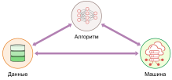
Операционный диагноз заслуживает доверия только тогда, когда вмешательство его подтверждает, то есть когда снятие выявленного ограничения улучшает поведение всей системы. Устранение одного узкого места часто переносит лимитирующее ограничение на соседнее ребро Рисунок 3, поэтому вмешательства редко завершают процесс оптимизации. Переход на более быстрые ускорители (Machine) оставляет исполнительные блоки простаивающими, если подсистема хранения не способна достаточно быстро передавать входные батчи (Data). И наоборот, увеличение объёма набора данных (Data) выявляет архитектуры моделей, которым не хватает выразительной способности усваивать новые закономерности (Algorithm). Нарращивание ёмкости модели для закрытия этого разрыва (Algorithm) вскоре превышает память ускорителя, вызывая ошибки нехватки памяти (out-of-memory) или дорогостоящую подкачку через шину PCIe (Machine). Следовательно, проектирование МЛ-системы требует не только выявления текущего лимитирующего ограничения, но и предвидения того, куда мигрирует узкое место после снятия этого ограничения.
Хотя триада разделяет три оси ради упрощения первичной диагностики, практические системы работают на их границах. Форматы данных определяют трафик памяти, архитектуры моделей диктуют утилизацию функциональных блоков оборудования, а бюджеты развёртывания меняют как представление данных, так и алгоритмические решения. Рисунок 4 разбивает эти интерфейсы на диаграмму Венна из трёх множеств, где каждое попарное пересечение ставит один вопрос: чему система может научиться (
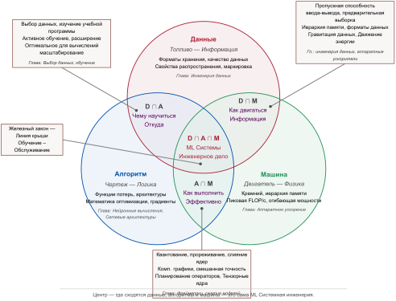
В центре все три вопроса должны решаться совместно. Отбор данных и обучение определяют, какие примеры помогают модели усваивать полезное поведение. Инженерия данных и аппаратное ускорение доставляют эту информацию машине с нужной скоростью. Фреймворки и техники исполнения превращают вычисления модели в эффективную работу на этом кремнии. Прореживание модели (pruning) (Algorithm), удаляющее параметры, которые мало влияют на её предсказания, меняет занимаемый моделью объём памяти и то, какая её часть остаётся в быстрой памяти на кристалле (Machine). Сжатие входных признаков также может сократить пересылки данных, добавляя подготовительную работу (Data). Эти изменения должны оцениваться через интерфейсы, поскольку локальное улучшение может не изменить сквозной результат.
↪ Как прореживание сокращает занимаемый моделью объём памяти и почему его влияние на скорость зависит от структуры разреженности, которую способно использовать оборудование, раскрывается в Прореживание.
6 Когда МЛ-системы выходят из строя незаметно
Даже когда каждый компонент исполняется без ошибок, сдвиг на оси данных способен незаметно ухудшить предсказания. Эта уязвимость определяет первую половину двойного мандата: сохранение доверия к выученному поведению после развёртывания. В автомобильной системе помощи водителю диагностические коды неисправностей и аппаратные сторожевые таймеры выявляют неисправности оборудования или связи, однако они не измеряют, как часто модель восприятия обнаруживает пешеходов. Когда сезонные условия приносят низкое зимнее солнце, интенсивные осадки или объёмную одежду, слабо представленную в обучении, полнота (recall) распознавания пешеходов может снизиться с 95 percent до 85 percent, при этом ускоритель обрабатывает изображения на полной частоте кадров, не поднимая аппаратной ошибки.
В этом примере доля пропусков утраивается: с 1 на 20 кадров с пешеходами до 3 на 20. Это существенное изменение качества обнаружения, но оно не означает утроения риска на уровне автомобиля, поскольку другие части системы автомобиля тоже влияют на то, как пропущенное обнаружение сказывается на решении при вождении. Корректность исполнения и предсказательное качество — отдельные свойства, и МЛ-система должна проектироваться и контролироваться по обоим.
Сбои, необработанные исключения и проваленные проверки состояния делают некоторые программные дефекты непосредственно наблюдаемыми, хотя и обычное программное обеспечение может порождать незаметные численные ошибки или логические баги. Машинное обучение добавляет ещё один путь к незаметной деградации: выученное поведение теряет предсказательное качество по мере изменения эксплуатируемой популяции, даже когда среда исполнения выполняет инструкции без ошибок, выделения памяти завершаются успешно, а инференс-серверы возвращают предсказания с большим запасом по задержке в рамках соглашений об уровне обслуживания (SLA).
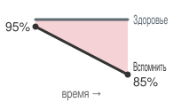
Полнота (recall) падает, тогда как метрики здоровья остаются неизменными.
Входные распределения могут дрейфовать при изменении условий окружающей среды, поведения пользователей или калибровок датчиков (Gama и др. 2014 г.; Quiñonero-Candela и др. 2009 г.). Этот дрейф данных означает, что производственные входные данные больше не следуют распределению, на котором обучалась модель. Модель может применять свои фиксированные веса к входным данным, непохожим на те, на которых она оценивалась. Машина способна корректно выполнить каждую операцию, выдавая предсказания, качество которых больше не соответствует требованию.
Измерения исходов устанавливают, упало ли предсказательное качество; сигналы расхождения распределений могут побудить к расследованию ещё до поступления этих исходов. Когда наблюдаются и те и другие, деградацию модели можно локально аппроксимировать как функцию сдвига распределения. Сдвиг суммируется статистическим расхождением — единственным числом, которое растёт по мере того, как два распределения становятся менее похожими. Несколько формул, называемых мерами расхождения, могут дать это число; приведённому ниже уравнению требуется лишь само число, поэтому выбор меры здесь оставлен открытым.
Уравнение сравнивает два распределения.
Эта аппроксимация описывает локальный тренд, подобранный по наблюдаемым входным данным и размеченным исходам; она не является универсальным законом потери точности. Сдвиг может снизить качество инференса даже при неизменных модели и среде исполнения, но сам по себе сдвиг не доказывает потерю качества, а большие изменения могут выходить за пределы диапазона, где подобранная зависимость выполняется. Эксплуатация систем машинного обучения возвращается к этому уравнению как к статистическому диагностическому средству дрейфа.
↪ Статистика, измеряющая сдвиг распределений и обнаруживающая дрейф в производственных данных, раскрывается в Обнаружение дрейфа данных и реакция на него.
Уравнение разделяет базовое качество и чувствительность к сдвигу. Лучшие данные, целевые функции и архитектуры могут изменить обе величины, поэтому улучшение базы само по себе не доказывает устойчивость к дрейфу. В примере с вождением обучение на репрезентативных зимних изображениях может снизить чувствительность к сезонным условиям; оценить полноту распознавания пешеходов в этих условиях означает установить, так ли это. Мониторинг
↪ Как сигналы дрейфа и размеченные результаты превращаются в эксплуатационное решение о переобучении, принимаемое только тогда, когда ожидаемая выгода превышает затраты, раскрывается в Структура решения о переобучении.
Тихая деградация может зарождаться и внутри системы через рассогласование обучения и инференса (training-serving skew). Обучение и инференс могут использовать разные реализации преобразования сырых входных данных в признаки модели. Если эти преобразования различаются — например, из-за изменения размера изображений другим методом интерполяции или применения иных значений по умолчанию для пропущенных значений, — модель получает входные данные, не похожие на те, что использовались при обучении. Модель может корректно исполняться и вовремя возвращать предсказания, в то время как точность падает. Это дефект программной согласованности, следствием которого становится ухудшенное выученное поведение.
↪ Сохранение кода преобразований и их подобранных параметров идентичными между обучением и инференсом раскрывается в Согласованность обучения и обслуживания.
Сигналы здоровья хоста, такие как загрузка CPU, резидентная память, сетевой ввод-вывод и коды состояния HTTP, остаются необходимыми, но они не измеряют, полезны ли предсказания. Поэтому эксплуатация МЛ-системы означает отслеживание этих инфраструктурных метрик наряду с качеством данных, распределениями признаков и точностью предсказаний. Поскольку МЛ-система может отказывать тихо, пока инфраструктурные метрики выглядят штатными, дизайн системы должен интегрировать непрерывную оценку от приема данных до обслуживания инференса.
Полезные предсказания удовлетворяют первой половине двойного императива. Вторая половина требует выдавать их в рамках доступных бюджетов задержки, памяти, энергии и стоимости. Соблюдение этих бюджетов требует количественного учёта того, куда уходит время исполнения.
7 Железный закон МЛ-систем
Вычислительный масштаб имеет физическую цену, и она проявляется в виде двух знакомых отказов. Задача обучения буксует, когда хранилище не успевает питать ускоритель; путь инференса пропускает дедлайн, когда состояние модели слишком медленно перемещается через память или по сети. Симптомы различаются, но оба случая подчиняются тому, как три оси D·A·M сочетаются, расходуя физическое время. Для любых задач машинного обучения — при работе с данными (Data, D), алгоритмом (Algorithm, A) и машиной (Machine, M) — выполнение задачи завершается обработкой набора сэмплов (примеров в задачах зрения или табличных данных, токенов в языковых моделях) операциями алгоритма на аппаратном обеспечении. По правилу сокращения размерностей полное время исполнения
Одно и то же уравнение управляет и обучением, и инференсом, поскольку меняются лишь определение задачи и масштаб каждого фактора. Произведение первых двух факторов задаёт полный объём арифметики
- Обучение: задача — это тренировочный прогон (или шаг оптимизации). Здесь
— это бюджет токенов корпуса (от миллиардов до триллионов токенов), а охватывает прямой и обратный проходы ( FLOPs на токен для плотной языковой модели, что даёт ). Поскольку большие тренировочные батчи (группы примеров, обрабатываемые совместно) переиспользуют веса модели на тысячах токенов за шаг, машина амортизирует пересылки памяти и накладные расходы диспетчеризации, удерживая реализованное низким и близким к лучшему, что способно выдать оборудование. - Инференс: задача — это обслуживание запроса или генерация ответа. Здесь
сжимается до небольшого батча запроса ( ) или потока генерируемых токенов, а покрывает только прямой проход ( FLOPs на токен). С гораздо меньшим числом сэмплов на вызов, амортизирующих чтение весов и оркестрацию, реализованное резко растёт, поскольку пропускная способность памяти и фиксированная задержка перевешивают арифметику.
Реальная машина не достигает паспортного минимума
Деление этой суммы на число выполненных операций
Вместе Уравнение 2 и Уравнение 3 описывают половину физического исполнения двойного императива, введённого в Глава 1:
- Слагаемое памяти
представляет физическую цену перемещения битов. — объём перемещённых данных (байты), — пропускная способность памяти или сети (байт/с). Загружаются ли терабайты из облачного хранилища или извлекаются ли веса из высокоскоростной памяти (HBM) — многослойной динамической оперативной памяти (DRAM), упакованной рядом с ускорителем, — производительность часто ограничена физикой ввода-вывода. Сторону хранения этого слагаемого раскрывает 04_data_engineering, а иерархию памяти — Аппаратное ускорение. - Вычислительное слагаемое
представляет цену арифметики. — число операций с плавающей точкой (FLOPs), задаваемое произведением и . — теоретическая пиковая пропускная способность оборудования (FLOP/с). — безразмерная реализованная утилизация вычислений . Это слагаемое раскрывают Обучение модели и Аппаратное ускорение. - Слагаемое задержки
представляет накладные расходы на оркестрацию, сеть и сериализацию (секунды), рассматриваемые как фиксированные для моделируемого исполнения. Инженерные изменения могут уменьшить эти накладные расходы, которые могут доминировать на небольших критичных к задержке запросах, где мало данных перемещается и мало выполняется арифметики. Это слагаемое раскрывает Обслуживание моделей.
Рассмотрим гипотетическую задачу, которая тратит 2 seconds на перемещение данных, 8 seconds — на вычисления и 1 second — на накладные расходы. Её полное время составляет 11 seconds. Удвоение скорости арифметики сокращает вычисления до 4 seconds, но оставляет перемещение и накладные расходы без изменений. Задача теперь занимает 7 seconds, а не половину исходного времени. Более быстрый компонент помогает только в той части бюджета времени, которую он изменяет.
Данные входят в Уравнение 2 и Уравнение 3 двумя различными способами: логические сэмплы против физических байтов. В Уравнение 2 фактор Data подсчитывает, сколько примеров или токенов обрабатывает задача (например, размер датасета
Системный взгляд 1.1: Аналогия железного закона
Название «железный закон» отсылает к уравнению производительности процессора Паттерсона и Хеннесси (2017 г.),
Аддитивная форма предполагает последовательное исполнение. Когда перемещение и вычисления перекрываются, нижнюю границу по критическому пути вместо суммы задаёт Уравнение 4:
Даже в виде суммы железный закон выявляет, какое физическое ограничение доминирует, до того как начата любая оптимизация. Закон Амдала (Amdahl 1967 г.) играет ту же роль для ускорений. Ускорение только части задачи оставляет нетронутый остаток на месте, и этот остаток ограничивает ускорение всей задачи, как бы ни ускорялась ускоренная часть. Аппаратное ускорение формулирует это ограничение как границу на полное ускорение (Уравнение (1)). От суммы к максимуму представляет уточнённый разбор, включая конвейеризацию и техники перекрытия, превращающие аддитивную модель в используемую на практике формулировку через max.
Доминирует ли слагаемое памяти или вычислительное слагаемое — зависит от арифметической интенсивности
↪ Модель «крыши» (roofline), ограничивающая достижимую пропускную способность арифметической интенсивностью и определяющая точку перегиба, раскрывается в Границы производительности.
Инженерный расчёт 1.1: Оценка одного локального исполнения
Задача: гипотетическая рабочая нагрузка на одном ускорителе перемещает 2 GB при 100 GB/s, выполняет 1 GFLOP при эффективной скорости арифметики 100 GFLOP/s и несёт 5 ms фиксированных накладных расходов. Перемещение предшествует вычислениям. Какое время исполнения предсказывает железный закон и какую скорость следует улучшать в первую очередь?
Решение: деление байтов на байт/с даёт время перемещения 20 ms. Деление FLOPs на FLOP/с даёт время вычислений 10 ms; указанная эффективная скорость уже включает
Результат: повышение пропускной способности до 200 GB/s сокращает перемещение до 10 ms, а полное последовательное время — до 25 ms. Арифметика и накладные расходы остаются без изменений, поэтому удвоение пропускной способности не сокращает полное время вдвое.
Системный вывод: если бы вместо этого перемещение и вычисления идеально перекрывались, а накладные расходы оставались вне обеих фаз, нижней границей было бы 25 ms до улучшения и 15 ms после. Улучшение выравнивает две стадии; дальнейшее увеличение только пропускной способности не изменило бы эту идеальную границу. Описывает ли измеренный прогон сумма или граница — зависит от его расписания исполнения.
Более крупная оценка обучения — для GPT-3 — возвращается к форме произведения из Уравнение 2 и использует символ
↪ Форма «железного закона» для обучения, которая преобразует количество операций в дни обучения при достигнутой утилизации, развивается в Закон времени обучения.
Инженерный расчёт 1.2: Обучение GPT-3
Задача: Сколько времени займёт обучение модели класса GPT-3 на гипотетическом современном кластере из 1,024 accelerators? Этот референсный кластер использует ускорители класса A100 — поколение новее, чем GPU V100 из исходного запуска, оценка которого выше составила примерно 405 V100 GPU-years. Таким образом, результат показывает, во что обошлась бы та же работа на более новом аппаратном обеспечении при утилизации, принятой ниже. Исходный запуск достигал более низкой утилизации, поэтому часть ускорения объясняется этим допущением, а не самим оборудованием.
Дано:
- Операции
: (произведение фактора данных, 300 billion токенов, и фактора алгоритма, FLOPs/токен при 175 billion параметрах) - Пиковая производительность
: 312 TFLOP/s - Эффективность
: ≈ 45 percent (сквозной коэффициент, поглощающий коммуникации и простои памяти, — не утилизация только вычислений из Уравнение 3; предполагаемое плановое значение для крупномасштабного распределённого обучения, где такие задержки удерживают реально достигаемую пропускную способность значительно ниже пиковой) - Количество ускорителей
: 1,024 accelerators
Расчёт:
Предположим, что рабочая нагрузка обучения переиспользует данные достаточно, чтобы арифметика стала доминирующей, и перекрывает загрузку данных вычислениями. В рамках этого приближения, где доминируют вычисления, оставшиеся коммуникации и простои памяти включены в эффективную сквозную утилизацию
Результат: 25 days.
Системный вывод: Если утилизация оборудования
Каждый член «железного закона» измеряется в секундах, но время — не единственное физическое ограничение. Как для устройств на батареях на периферии, так и для ускорительных кластеров складского масштаба рассеяние энергии и тепловые лимиты часто останавливают систему раньше, чем достигаются пределы пропускной способности. Перемещение битов через иерархию памяти также стоит энергии перемещения данных, что сродни задержке члена памяти.
↪ Проверка единиц измерения по каждому члену, показывающая, что каждый член «железного закона» измеряется в секундах, и её использование в качестве теста для любого уравнения производительности собраны для справки в Анализ размерностей.
Пусть
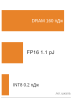
Перемещение одного байта из DRAM стоит около 145 энергии 16-битной операции умножения с плавающей точкой, поэтому в энергозатратах доминирует перемещение данных, а не арифметика.
Энергетическое сравнение зависит от размера пересылки и типа считаемой арифметической операции. При энергетических константах, используемых в этой книге, перемещение одного байта из внешней DRAM потребляет примерно 145× энергии 16-битной операции умножения с плавающей точкой (FP16) и 800× этой энергии для INT8 (8-битное целое) умножения (Horowitz 2014 г.). Доминирует ли перемещение в полной рабочей нагрузке, также зависит от числа и ширины пересылок относительно количества операций. Физическая причина разрыва на одно обращение в том, что перемещение данных требует зарядки и разрядки проводников на больших расстояниях, тогда как арифметика происходит локально внутри схем обрабатывающего блока. Поэтому минимизация неизбежного перемещения данных
↪ Энергетическая лестница от внутрикристальной арифметики к внешней памяти и почему её разрыв делает перемещение данных главной целью при проектировании ускорителей развиваются в Специализация аппаратного обеспечения для машинного обучения.
Контрольная точка 1.2: Железный закон
Прежде чем двигаться дальше, убедитесь, что вы можете оперировать обеими формами «железного закона» (Уравнение 2 и Уравнение 3, где
7.1 Маяковые модели вводят «железный закон» в практику
Каждый член «железного закона» подсказывает инженерное вмешательство. Член памяти можно уменьшить, перемещая меньше байтов или повышая эффективную пропускную способность. Вычислительный член можно уменьшить, выполняя меньше операций или эффективнее используя арифметические блоки. Член задержки требует сокращения накладных расходов на оркестрацию и коммуникации. Само по себе уравнение не говорит, какое вмешательство нужно системе; это зависит от измеренной рабочей нагрузки и того, помещаются ли требуемые данные в память.
Конкретные рабочие нагрузки отвечают на этот вопрос. Пять повторяющихся маяковых моделей служат диагностическими зондами для «железного закона» на протяжении всей книги; в последующих главах объясняются структуры моделей и механизмы исполнения, стоящие за их ограничениями. Каждая из них — отдельный стресс-случай при заявленных для неё условиях рабочей нагрузки:
- Классификация изображений (ResNet-50) (He и др. 2016 г.) зондирует вычислительную пропускную способность. При достаточном переиспользовании выученных фильтров по позициям изображения и батчевой подаче входов арифметический член (
) может доминировать во времени исполнения. - Генерация текста (GPT-2/Llama) зондирует пропускную способность памяти, где GPT-2 (Radford и др. 2019 г.) закрепляет маяк, а Llama (Touvron и др. 2023 г.) представляет его более крупных преемников. Генерация текста по одному токену за раз для одного запроса даёт мало переиспользования весов на токен, поэтому выборка весов из памяти (
) может стать ограничивающим фактором. - Рекомендации (DLRM), Deep Learning Recommendation Model (Naumov и др. 2019 г.), зондирует ёмкость памяти, которая определяет, сможет ли модель работать вообще. Таблицы эмбеддингов хранят числовые векторы для идентификаторов пользователей и объектов. Большие таблицы могут достигать примерно сотни гигабайт в референсных моделях (Naumov и др. 2019 г.) и терабайтов в продакшене (Mudigere и др. 2022 г.), превышая память устройства одного ускорителя.
- Мобильное зрение (MobileNetV2) (Sandler и др. 2018 г.) зондирует вычислительную пропускную способность в рамках лимита энергопотребления. Его эффективные операторы сокращают арифметику настолько, что процессор телефонного класса может классифицировать кадры в реальном времени, разделяя батарею и тепловой бюджет с другими приложениями.
- Обнаружение ключевых слов (KWS) зондирует лимит энергопотребления, поскольку всегда включённый микроконтроллер21 должен непрерывно слушать слово-активатор в рамках бюджета в милливатты и килобайты памяти (Zhang и др. 2017 г.).
Эти пять моделей намеренно не новейшие. Каждая отмечает точку, где поле развернулось, и изолирует одно ограничивающее условие в его чистейшей форме. ResNet-50 сделал обучение глубоких свёрточных сетей на ускорителях рутинным и стал референсной рабочей нагрузкой бенчмарка MLPerf training (Mattson и др. 2020 г.). GPT-2 показал, что масштабирование языковой модели с одним декодером меняет то, что она может делать. DLRM представляет рекомендательные модели, которые на момент его появления давали большинство циклов AI-инференса в дата-центрах Facebook (Gupta и др. 2020 г.). MobileNetV2 показал, что тщательное проектирование операторов может принести точное зрение процессорам телефонного класса (Sandler и др. 2018 г.), а обнаружение ключевых слов — что полезный инференс может непрерывно работать на микроконтроллере (Zhang и др. 2017 г.). Поздние модели растут в масштабе, но те же члены «железного закона» управляют ими, поэтому анализ в этой книге должен переноситься на модели, которые ещё не существуют.
«Железный закон» делает эти различия действенными при заявленных условиях рабочей нагрузки. Повышение пиковой вычислительной производительности
Один и тот же «железный закон», противоположный доминирующий член, противоположное исправление.
| Маяковая модель | Системное узкое место | Что раскрывает | Диагностическая цель |
|---|---|---|---|
| ResNet-50 | Вычислительная пропускная способность при переиспользовании | Утилизация GPU, формирование батчей | Арифметическая пропускная способность против простоев памяти |
| GPT-2/Llama | Пропускная способность памяти | Перемещение весов и состояния последовательности | Скорости пересылки весов и кэшированного контекста |
| Deep Learning Recommendation Model (DLRM) | Ёмкость памяти | Таблицы эмбеддингов, бюджетирование памяти | Ёмкость памяти устройства и разделение |
| MobileNetV2 | Вычисления в рамках лимита энергопотребления | Эффективное проектирование операторов | Дедлайны задержки в реальном времени в рамках лимитов батареи |
| Обнаружение ключевых слов (KWS) | Лимит энергопотребления | Крошечные бюджеты памяти и энергии | Непрерывный инференс в рамках милливаттных энергетических бюджетов |
Маяковые модели поставляют повторяющиеся рабочие нагрузки книги; парадигмы развёртывания, описанные далее в этой главе, поставляют операционные рамки, в которые эти рабочие нагрузки должны уместиться. «Железный закон» оценивает время исполнения одного запуска на одной машине, но за последнее десятилетие сами обучающие запуски росли быстрее, чем могли вместить одни лишь улучшения аппаратного обеспечения, что сделало эффективность центральной проблемой.
8 Три измерения эффективности машинного обучения
Поскольку вычислительные затраты на обучение росли быстрее, чем возможности оборудования (Рисунок 6), достижение заданного уровня качества должно было обходиться дешевле по каждому из сомножителей Уравнение 2. Прогон AlexNet 2012 года (Глава 3.3) — точка, где это давление началось. Его два потребительских GPU, работавшие около шести дней над 1.3M размеченных изображений обучающего сплита ImageNet 2012 года22 (Deng и др. 2009 г.), составляли бюджет, доступный университетской лаборатории. Современные фундаментальные модели — крупные модели, обученные на широких данных и затем адаптируемые ко многим задачам, — требуют вычислительных затрат на обучение примерно на 8 порядков больше.
Масштаб определяет прогресс ИИ, как утверждал «горький урок» (Глава 4), но всё более крупные наборы данных и вычислительные бюджеты сужают круг участников до наиболее обеспеченных ресурсами организаций. Даже эти организации со временем сталкиваются с физическими пределами — энергопотреблением дата-центров, пропускной способностью памяти и убывающей отдачей от добавления параметров. Поэтому более эффективное использование имеющихся вычислений — дополнительный путь к прогрессу.
Эффективность предлагает три взаимодополняющих выбора, соответствующих трём сомножителям Уравнение 2: выполнять меньше вычислений на образец, выполнять эти вычисления за меньшее число секунд на FLOP или выбирать более информативные примеры, чтобы задаче требовалось меньше образцов. Алгоритмическая эффективность снижает вычислительные требования (
Выбор между ними требует диагностики узкого места через интерфейсы на Рисунок 4. Все три должны учитывать перемещение информации: снижение только
Главы об оптимизации (Отбор данных, Сжатие моделей и Аппаратное ускорение) развивают эти измерения в порядке движения работы через систему. Отбор данных спрашивает, какие примеры заслуживают вычислений на обучение. Сжатие моделей23 спрашивает, сколько хранения и арифметики требует обученная модель. Аппаратное ускорение объясняет, как оставшиеся операции отображаются на память и вычислительные блоки. Этот порядок преподавания не предписывает последовательность оптимизации. Измеренное ограничивающее условие и бюджет развёртывания определяют, куда вмешаться в первую очередь, а аппаратные пределы с самого начала информируют выбор данных и моделей.
У алгоритмической эффективности самая ясная измеренная история. Hernandez и Brown (2020 г.) фиксировали точность на уровне AlexNet и спрашивали, сколько вычислений на обучение требуется последующим архитектурам для её достижения. Поскольку они считали операции, а не секунды, скорость оборудования не входит в измерение. Между AlexNet в 2012 году и EfficientNet в 2019 году требуемый объём вычислений упал в 44×, то есть примерно вдвое каждые 15 months между этими двумя конечными точками (Рисунок 5). Пунктирная линия на рисунке — экспоненциальная аппроксимация этих измеренных точек. Это сокращение измеряет алгоритмический прогресс при фиксированном качестве задачи. Сопоставить его с аппаратным прогрессом потребовало бы согласованной меры полезной пропускной способности или энергоэффективности; закон Мура описывает интеграцию транзисторов,24 что само по себе не определяет ни одну из этих величин.
Улучшения от архитектуры к архитектуре — лишь половина истории, потому что за те же годы совокупные вычисления на обучение в опубликованных передовых прогонах росли намного быстрее, чем алгоритмы могли это компенсировать. Рисунок 6 отображает этот рост в логарифмическом масштабе — от ранних моделей глубокого обучения около
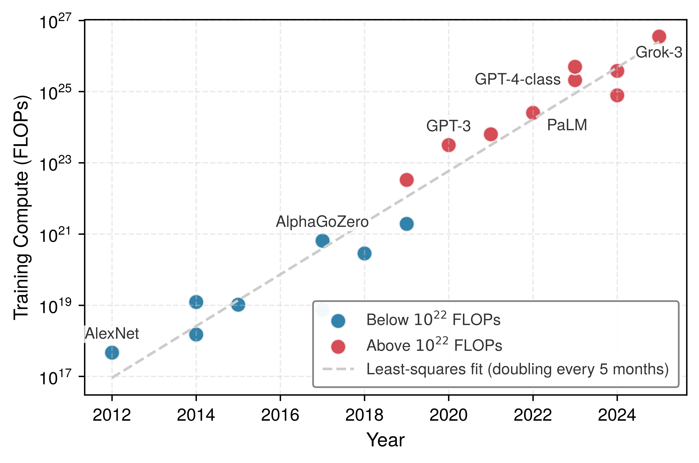
Эти два графика показывают, как выигрыш в эффективности может сосуществовать с ростом масштаба обучения. Рисунок 5 сообщает о снижении вычислений на 44× при фиксированной целевой точности, тогда как Рисунок 6 иллюстрирует рост примерно на 8 порядков в выбранных прогонах обучения. Они измеряют разные величины и включают контекстные оценки, поэтому сами по себе не устанавливают экономическую причинность.
Системный взгляд 1.2: Парадокс эффективности
Парадокс Джевонса (Jevons 1865 г.) описывает случаи, когда более эффективное использование ресурса приводит к большему совокупному потреблению, поскольку спрос расширяется. Подобный ответ возможен и в ИИ. Если EfficientNet требует на 44× меньше вычислений, чем AlexNet, для достижения той же точности, организация может реинвестировать экономию в более крупные модели или больше экспериментов. Она может также выбрать меньший бюджет или обслуживать больше пользователей при той же стоимости. Реинвестиции — возможное, но не неизбежное следствие эффективности, и одни лишь показанные тренды его не устанавливают.
Окупаются ли реинвестиции — вопрос экономический. Те же физические величины, что определяют время и энергию, определяют и стоимость: каждый перемещённый байт, каждая выполненная операция и каждая миллисекунда задержки потребляют инфраструктурный бюджет. Проверка состоит в том, покупает ли добавленный объём вычислений достаточно улучшения модели, чтобы оправдать затраты.
8.1 Окупаемость вычислений: сопоставление точности и стоимости
Обновление модели, повышающее точность на 1 процентный пункт, всё равно может оказаться неверным выбором, если требует увеличения
Критерий RoC сравнивает это отношение с тем, сколько стоит для приложения каждый пункт точности. Каждая альтернатива сравнивается с одной и той же базовой линией, и отношение определено только при положительных добавленных затратах.
Инженерный расчёт 1.3: Сравнение двух обновлений
Задача: Команда может добавить обучающие данные, что повышает точность на 2 пункта за $20,000 добавленных вычислений, или обучить более крупную модель, что повышает её на 3 пункта за $120,000. Каждый добавленный пункт точности стоит $15,000 для приложения. Какое обновление проходит критерий RoC?
Решение: Деление каждого прироста на его стоимость даёт RoC 1 пункта на $10,000 для добавленных данных и 0.25 пункта на $10,000 для более крупной модели. Пункт стоимостью $15,000 задаёт безубыточный RoC на уровне 0.67 пункта на $10,000.
Результат: Добавленные данные проходят безубыточный уровень, а более крупная модель — нет, хотя она даёт больший прирост точности.
Системный вывод: При измерении относительно варианта с добавлением данных, а не базовой линии, более крупная модель покупает 1 дополнительного пункта за $100,000, то есть 0.1 пункта на $10,000. Наибольший прирост точности — не лучшая инвестиция; решение определяется точностью, купленной за доллар, в сравнении с тем, сколько стоит точность.
Экономия средств сама по себе не является окупаемостью вычислений, но может оплатить работу, которую RoC затем оценивает. Оценка GPT-3 в ноутбуке 1.2 показывает именно такую экономию. Если предположить, что изменения планирования сохраняют качество модели, повышение $с 45 percent до 60 percent экономит 6 days кластерного времени при той же работе по обучению. Освобождённый бюджет может профинансировать другой эксперимент, чей прирост точности и стоимость затем должны быть измерены. Железный закон помогает оценить, сколько стоят вычисления; RoC спрашивает, стоит ли дополнительная инвестиция того. Поэтому варианты эффективности должны оцениваться относительно целей системы и ограничений развёртывания.
9 Инженерия ИИ как дисциплина
Облачный сервис может оптимизировать пропускную способность на стойках ускорителей, тогда как краевое устройство должно оставаться в строгом батарейном и тепловом бюджете, так что одна и та же модель может быть эффективной в одной обстановке и непригодной в другой. Инженеру, который должен удерживать предсказательное качество и ресурсную стоимость в рамках одной спецификации при столь разных рабочих бюджетах, нужно соединить три количественных инструмента. Уравнение деградации оценивает предсказательное качество в обеих обстановках, железный закон и его энергетический аналог (Уравнение 5) оценивают время выполнения и энергию, а окупаемость вычислений показывает, стоит ли платить за улучшение того или другого.
Применение этих трёх инструментов опирается на информатику, электротехнику, статистику и устоявшиеся практики программной и системной инженерии. Соединение этих областей напоминает более раннее сближение вычислительной техники и электротехники в компьютерной инженерии.25 В употреблении этой книги «инженерия ИИ» обозначает дисциплину и её общие принципы, а «инженерия ML-систем» — работу по применению их к построению и эксплуатации конкретной системы в её ограничениях развёртывания.
Определение 1.3: Инженерия ИИ
Инженерия ИИ — дисциплина проектирования, развёртывания и сопровождения ML-систем, чьё предсказательное качество и исполнение удовлетворяют заявленным требованиям развёртывания. Она интегрирует решения о данных, алгоритмах и машинах, используя статистические свидетельства для оценки выученного поведения и измерения — для оценки потребления ресурсов.
- Значимость: Улучшение модели должно по-прежнему удовлетворять прочим требованиям системы. Инженерия ИИ совместно рассматривает качество данных и управление, качество предсказаний, время выполнения, память, энергию и стоимость. Модель, достигающая 95 процентов точности в исследовании, но нарушающая требование задержки развёртывания в 100 мс, не соответствует спецификации системы.
- Отличие: Оценка уровня модели устанавливает свидетельства при заданном наборе данных и протоколе. Инженерия ИИ должна перенести эти свидетельства в полную систему, чьи задержка, пропускная способность, точность, стоимость, справедливость и устойчивость удовлетворяют требованиям развёртывания, и переоценить их при изменении рабочих условий.
- Типичная ошибка: Частое заблуждение состоит в том, что инженерия ИИ — это просто «программная инженерия для ML». Корректность программ остаётся необходимой, но спецификация системы включает также статистические утверждения о выученном поведении на рабочей популяции. Тесты кода сами по себе не могут установить эти утверждения, что делает непрерывную оценку и мониторинг частью дизайна системы.
Поскольку определение опирается на статистические свидетельства, требование может быть зафиксировано, тогда как свидетельства его выполнения остаются неопределёнными. Полнота (recall) по пешеходам не менее 95 процентов на заданной популяции — фиксированная цель; оценка измеряет полноту по выборочным исходам с неопределённостью, которую нужно сообщать и пересматривать при изменении условий. Требования к исполнению также требуют определённой рабочей нагрузки и протокола измерения. Выборочные времена отклика поддерживают статистическое утверждение о задержке; жёсткая граница требует предположений и анализа, покрывающих указанные условия исполнения.
9.1 Инженерия на протяжении жизненного цикла ML
Поставка обученной модели в продакшн не завершает инженерную работу, поскольку свидетельства за ней должны пересматриваться при изменении условий. Первый сдвиг в поведении пользователей или во входных данных может вернуть развёрнутую систему к сбору данных и обучению. Ввод алгоритмического достижения в эксплуатацию требует ingestion данных и предобработки, вычислений в доступном машинном бюджете, надёжного обслуживания и постоянных свидетельств реальной производительности. Эти обязательства образуют повторяющийся жизненный цикл, а не линейную последовательность, заканчивающуюся развёртыванием. Инженерный объект — теперь не только код, но и данные, поведение модели, контекст развёртывания и свидетельства мониторинга, эволюционирующие вместе.
Отличие от обычного программного обеспечения сначала проявляется в инструментарии. Контроль версий, непрерывная интеграция и статический анализ давно поддерживают поведение, определённое кодом. Для выученного поведения эти практики должны также отслеживать версии наборов данных и моделей и проверять предсказательное качество, поскольку изменения одного лишь исходного кода не описывают изменения развёрнутой системы.
↪ Элементы рабочего процесса, которые выученное поведение добавляет к устоявшейся программной практике, развиваются в ML и традиционное ПО.
На уровне проекта работа начинается с определения проблемы, которое задаёт задачу и требования приёмки до сбора каких-либо данных. Рисунок 7 прослеживает последующую работу через шесть стадий: сбор данных, подготовка данных, обучение модели, оценка, развёртывание и мониторинг.
Обратная связь в этом цикле должна оценивать и выученное поведение, и исполнение программ. На Рисунок 7 неудачная оценка возвращает работу к подготовке данных, а деградация производительности в продакшне — к сбору данных. Шесть стадий и пути обратной связи, соединяющие их в цикл, развиваются в Жизненный цикл как цикл.
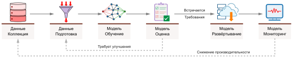
Каждая стадия этого цикла несёт собственные ресурсные требования. Эти требования не одинаковы, поскольку ограничивающие физические условия зависят от того, где развёрнута система.
9.2 Контекст развёртывания формирует жизненный цикл
Контекст развёртывания определяет, какие давления жизненного цикла доминируют. Одни и те же стадии применимы ко всем ML-системам, но дата-центр мегаваттного масштаба и встроенное устройство милливаттного масштаба налагают разные узкие места на сбор данных, обновление моделей, мониторинг и обслуживание. Четыре парадигмы развёртывания покрывают этот диапазон (облако, край, мобильные устройства и TinyML), и их бюджеты различаются на порядки.
От облака до TinyML конечные точки различаются примерно на
↪ Световой барьер, стена энергопотребления и стена памяти, формирующие эти рабочие бюджеты, развиваются в Физические ограничения развёртывания.
Жёсткие дедлайны отклика или ненадёжная связь могут требовать локального исполнения, как в управлении транспортным средством. Обнаружение мошенничества, напротив, может работать на облачной инфраструктуре, пока сетевая и сервисная задержка укладывается в бюджет решения. Сервисы на основе больших языковых моделей полагаются на централизованные кластеры, чтобы вместить их требования к памяти и вычислениям. Уровень, на котором работает система, затем задаёт пределы, отдающиеся в жизненный цикл. Ёмкость и стоимость облака определяют, как часто переобучаются модели, какие исторические данные сохраняются и как распределяется нагрузка инференса, тогда как пределы края и мобильных устройств ограничивают размер модели и частоту обновлений.
По мере распределения вычислений по уровням вместе с ними растёт операционная сложность. Краевые и гибридные развёртывания должны поддерживать сбор данных, обновления моделей и мониторинг согласованными на множестве удалённых устройств, связь которых появляется и исчезает. Давление данных тянет в противоположные стороны одновременно: правила приватности и суверенитет данных подталкивают вычисления к краю, тогда как обучение высокоёмких моделей тянет данные обратно к централизованным кластерам. Распространённый продакшн-паттерн разрешает это напряжение, исполняя инференс локально на краю и направляя выборочную телеметрию в облачные кластеры для дообучения.
В любом контексте развёртывания модель в конце концов встречает входные данные, которые её оценка никогда не сэмплировала. В автономном вождении восприятие работает на автомобиле, пока облачные кластеры обучают обновлённые веса на журналированных данных автопарка. Waymo Open Dataset показывает выраженные доменные разрывы между Сан-Франциско, Финиксом и Маунтин-Вью (Sun и др. 2020 г.), и модели, хорошо оцениваемые на бенчмарках, часто теряют точность при смещении входов развёртывания (Koh и др. 2021 г.). Поэтому каждое удалённое обновление должно заново валидироваться на той популяции, которую оно будет реально обслуживать.
Развёртывание также помещает предсказания перед людьми, которых они затрагивают, поэтому помимо предсказательной точности и задержки развёрнутые системы должны удовлетворять требованиям справедливости, интерпретируемости и приватности по данным, моделям и управлению. Обучающие множества могут кодировать общественные предвзятости. Регулируемые области, такие как здравоохранение и финансы, требуют решений, интерпретируемых аудиторами и клиницистами. Атаки через инференс27 могут извлечь чувствительную информацию из обученных весов. Выполнение этих технических, операционных и управленческих обязательств во всех четырёх режимах развёртывания задаёт структуру последующей книги.
10 Организация книги
Промышленная работа с МЛ разделяется на зоны ответственности инженерных команд: инженерия данных, системы обучения, инфраструктура развёртывания, эксплуатация и мониторинг, а также этика и управление (Paleyes и др. 2022 г.). Эти границы проницаемы. Расположенные выше по потоку конвейеры данных ограничивают то, что может достигнуть обучения; решения, принятые при обучении, фиксируют требования к памяти и задержке на этапе обслуживания; управление охватывает каждый этап, поэтому книга не следует структуре организации. Её четыре части следуют порядку, в котором должны быть поняты ограничения. Организующий принцип — контекст раньше теории. Аппаратные пределы и узкие места приёма данных определяют, какие алгоритмы практически применимы, поэтому книга сначала устанавливает физические рабочие границы каждого сценария развёртывания и конвейера данных, а затем сверяет ресурсные требования каждого алгоритма с этими границами. Сам дизайн ускорителей подробно изучается позже — после того, как модели, которые он должен исполнять, будут построены. Читатели сначала устанавливают операционные границы и словарь (часть I), затем строят модели (часть II), оптимизируют вычислительную эффективность (часть III) и развёртывают системы в условиях производственных соглашений об уровне обслуживания (часть IV); эта последовательность обобщена в Таблица 5.
| Часть | На какой вопрос отвечает | Ключевые главы |
|---|---|---|
| I: Основы МЛ-систем | Что строится, при каких ограничениях и из каких входных данных? | 02_system_paradigms, 03_ml_lifecycle, 04_data_engineering |
| II: Разработка и обучение | Как модель вычисляет, как она устроена и как она обучается? | Нейронные вычисления, Архитектуры сетей, ML-фреймворки, Обучение модели |
| III: Оптимизация и ускорение | Как сделать модель дешевле и как доказать полученный выигрыш? | Отбор данных, Сжатие моделей, Аппаратное ускорение, Бенчмаркинг |
| IV: Развёртывание и эксплуатация | Выдержит ли система реальных пользователей, меняющиеся данные и свои обязательства? | Обслуживание моделей, Эксплуатация систем машинного обучения, Ответственный инжиниринг |
Каждая часть открывается именованными принципами, которые она развивает. Они пронумерованы по всей книге, чтобы последующие главы могли ссылаться на них. Например, часть о развёртывании открывается разрывом верификации, который был введён в этой главе на примере ImageNet.
Эта книга сосредоточена на одноузловом режиме: один хост с одним–восемью ускорителями, каждый из которых обычно использует локальную память устройства и взаимодействует через межсоединение внутри узла, такое как PCIe или NVLink — прямая связь NVIDIA между ускорителями. Ограничивающее ограничение зависит от рабочей нагрузки и может быть представлено ёмкостью памяти, пропускной способностью памяти, производительностью вычислений или связью. Более крупные фермы добавляют ограничения координации и сети между множеством хостов. Для траекторий чтения, учебных результатов, предварительных требований и рекомендаций по работе с учебником ориентацию даёт предисловие.
11 Заблуждения и ловушки
Каждая глава этой книги завершается разделом вроде этого. Заблуждение — это убеждение, которое звучит правдоподобно, но является ложным; ловушка — это практика, в которую легко впасть и из которой дорого выбираться; каждая запись исправляет ошибку с опорой на доказательства из главы.
Успешно пройденный тест кода, высокий показатель на отложенных данных и ускоренный этап инференса каждое по отдельности дают полезные свидетельства, но ни одно из них само по себе не устанавливает, что МЛ-система отвечает своим требованиям. Смешение проверок на уровне кода с валидацией выученного поведения упускает разрыв верификации и скрытую деградацию. Трактовка показателя на отложенных данных как доказательства готовности к развёртыванию игнорирует сдвиг распределения и бюджеты исполнения. Экстраполяция ускорения отдельного компонента на всю систему упускает нетронутые издержки, охватываемые законом Амдала. Каждая из этих ошибок распространяет свидетельства за пределы условий, которые их поддерживают.
Заблуждение: Лучшие алгоритмы автоматически дают лучшие системы.
Более точный спам-классификатор всё ещё может оказаться худшим производственным выбором, если ему требуется слишком много памяти или он не может классифицировать входящие сообщения в рамках бюджета доставки. Железный закон (Глава 7) объясняет, почему одно лишь качество алгоритма не решает этот вопрос. Выбор модели должен максимизировать качество задачи при соблюдении требований к задержке, памяти, энергии, стоимости и надёжности. Более простая модель, поддержанная репрезентативными данными и надёжной инфраструктурой, может удовлетворить эти требования эффективнее, чем изощрённая модель с неадекватной окружающей системой.
Ловушка: Отношение к МЛ-системам как к традиционному ПО, в которое случайно добавлена модель.
Устоявшиеся практики тестирования и развёртывания остаются необходимыми для МЛ-систем, но одних лишь проверок на уровне кода недостаточно для валидации выученного поведения (Глава 6). В примере с системой помощи водителю полнота обнаружения пешеходов может упасть с 95 до 85 percent, в то время как ускоритель сохраняет полную частоту кадров и не поднимает ни одной аварии. МЛ-системы дополнительно требуют мониторинга исходов для обнаружения снижения предсказательного качества, с достаточным числом размеченных образцов из каждой группы пользователей, чтобы выявить падение качества в этой группе. Команды, развёртывающие МЛ только с конвейерами непрерывной интеграции и непрерывного развёртывания (CI/CD), рискуют скрытыми отказами, при которых наборы тестов и проверки здоровья сообщают зелёный свет, а качество предсказаний, видимое пользователям, деградирует.
Заблуждение: Высокая точность на эталонных наборах данных свидетельствует о готовности к эксплуатации.
Показатель на эталоне описывает производительность на заданном наборе данных в рамках протокола оценки; он не устанавливает готовности к развёртыванию (Глава 9.2). Валидационный набор ILSVRC содержит 50,000 изображений, тогда как число возможных входов имеет 362,508 цифр (Глава 2), поэтому даже идеальный показатель — это свидетельство о выборке, а не доказательство о генеральной совокупности. Модель анализа тональности может терять точность, когда пользователи применяют сленг или контекст, отсутствующий в тестовом наборе. Развёртывание также вводит ресурсные требования: ограничения мобильной памяти и задержки могут сделать одновременный запуск нескольких моделей (ансамбля) непрактичным, а сетевые круговые поездки могут израсходовать бюджет ответа. Производственная валидация должна охватывать предполагаемые условия эксплуатации, релевантные подгруппы, использование ресурсов и мониторинг, необходимый для обнаружения изменений.
Ловушка: Оптимизация отдельных компонентов без учёта их взаимодействия в системе.
Закон Амдала, согласно которому нетронутая доля задачи ограничивает ускорение целого, объясняет, почему улучшение одного лишь инференса может дать малый сквозной выигрыш. Рассмотрим команду, которая сокращает инференс модели с 45 ms до 15 ms, ожидая пропорционального улучшения. Предобработка по-прежнему занимает 60 ms, а постобработка добавляет 25 ms, поэтому общая задержка снижается лишь с 130 ms до 100 ms. Это улучшение общей задержки на 23 percent, а не на 67 percent, как для одного лишь этапа инференса. Большая часть пути запроса осталась нетронутой. Измерение всего пути запроса предотвращает ошибочное принятие ускорения компонента за ускорение системы. Граница в Уравнение (1) вычисляет общее ускорение из доли времени, занимаемой компонентом, и его локального выигрыша.
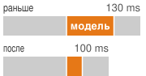
Трёхкратное ускорение модели уменьшает сквозную задержку лишь на 23 percent.
Заблуждение: МЛ-системы можно развернуть один раз и оставить работать бесконечно.
Развёрнутые МЛ-системы не могут предполагать неизменность производительности во времени: сдвиги распределения среды могут деградировать замороженную модель, даже когда лежащий в основе исполняемый код остаётся нетронутым. В этом иллюстративном сценарии рекомендательная система, развёрнутая с точностью 85 percent, падает до 80.2 percent в течение 6 months по мере изменения паттернов покупок, теряя 4.8 percentage points без каких-либо изменений кода. Поэтому жизненный цикл МЛ (Глава 9.1) трактует мониторинг исходов и основанное на доказательствах переобучение как эксплуатационные требования. Без непрерывного мониторинга системы могут выглядеть здоровыми, пока качество предсказаний скрыто разрушается.
Ловушка: Предположение, что одной лишь экспертизы в МЛ достаточно для инженерии МЛ-систем.
Промышленное МЛ (Глава 9.2) требует экспертизы в алгоритмах, ПО, системах и эксплуатации. Команда с сильными навыками МЛ всё же может не достичь целевой пропускной способности, если структура хранения или инфраструктура обслуживания неадекватны. И наоборот, инфраструктура, построенная без внимания к входам модели, может привнести дефекты предобработки, деградирующие предсказания. Кейсы развёртывания показывают необходимость согласованного внимания к данным, моделям, инфраструктуре и организационному рабочему процессу (Paleyes и др. 2022 г.). Отказы могут возникать на границах, где допущения одной команды становятся входами другой.
12 Итоги
Системы машинного обучения должны одновременно удовлетворять двум обязательствам: выученное поведение должно оставаться заслуживающим доверия, а машина должна обеспечивать это поведение в пределах физических и экономических ограничений. Каждая МЛ-система отвечает на три вопроса: что формирует её предсказания, что ограничивает её исполнение и какие свидетельства поддерживают её развёртывание. Таксономия D·A·M организует эту диагностику, уравнение деградации и железный закон количественно описывают компромиссы, а эффективность вместе с отдачей от вычислений направляет выбор вмешательств. Поскольку данные и условия эксплуатации постоянно меняются, эти ответы никогда не остаются неизменными. Пять маячных моделей (ResNet-50, GPT-2/Llama, DLRM, MobileNetV2 и keyword spotting) повторяются на протяжении книги, чтобы привязать эти методы к конкретным рабочим нагрузкам.
Вернёмся ко взаимодействию со смартфоном, открывшему главу. То, что выглядело как одно разумное действие, зависело от репрезентативных данных, выученной модели, машины в рамках рабочего бюджета и обратной связи, способной выявить меняющееся поведение. Эта цепочка отвечает на вопрос, поставленный в начале: точная модель сама по себе не устанавливает надёжную и эффективную систему. AI-инжиниринг координирует эти решения и использует измеренные свидетельства, чтобы оценить, отвечает ли полная система своим требованиям.
Основные выводы: Ограничения определяют архитектуру
- Снятие узкого места может обнажить другое: ограничения Данных, Алгоритма и Машины взаимодействуют. После вмешательства снова измерьте полную систему, чтобы определить, какое ограничение теперь лимитирует результат.
- Выученное поведение может деградировать скрыто: МЛ-системы могут терять предсказательное качество при неизменном коде и инфраструктуре, поскольку входы при развёртывании меняются. Метрики дрейфа побуждают к расследованию; размеченные исходы устанавливают, упало ли качество предсказаний.
- Сквозное время — это весь путь: перемещение данных, вычисления и накладные расходы расходуют один и тот же бюджет времени. Сокращение инференса с 45 ms до 15 ms даёт лишь 23 percent улучшения, когда доминируют предобработка (60 ms) и постобработка (25 ms), поэтому оптимизируйте тот член, который лимитирует сквозное поведение.
- Масштаб требует полезных вычислений: горький урок подчёркивает методы поиска и обучения, способные эффективно использовать растущие вычисления. Их выгода зависит от данных, целей и поддерживающей машины. Рост эффективности в 44× при фиксированной целевой точности сосуществовал с ростом примерно на 8 порядков в выбранных прогонах обучения.
- AI-инжиниринг — это непрерывное совместное проектирование: требования развёртывания направляют решения о данных, моделях и исполнении. Оценка и мониторинг жизненного цикла дают свидетельства того, что предсказательное качество и использование ресурсов продолжают отвечать этим требованиям.
Задуманная способность становится инженерным результатом лишь тогда, когда измеренное поведение достигает цели в рамках выполнимого ресурсного бюджета. Данные, цели обучения, проектные решения и аппаратное обеспечение — всё это формирует этот результат. Поэтому первым инженерным действием является измерение полной системы, а не оптимизация её самой заметной части.
Дальнейшие шаги: От видения к архитектуре
В этой главе утверждалось, что четыре парадигмы развёртывания имеют рабочие границы, различающиеся на порядки, — без вывода этого разрыва. 02_system_paradigms выводит его из физических пределов и превращает в основу для принятия решений при выборе между ними, когда требования конфликтуют.
использованная литература
Amdahl, Gene M. 1967 г. «Validity of the single processor approach to achieving large scale computing capabilities». Proceedings of the April 18-20, 1967, spring joint computer conference on - AFIPS ’67 (Spring), AFIPS ’67 (Spring), 483–85. https://doi.org/10.1145/1465482.1465560.
Amodei, Dario, и Danny Hernandez. 2018 г. «AI and Compute». OpenAI Blog 6. https://openai.com/research/ai-and-compute.
Bobrow, Daniel G. 1964 г. «Natural Language Input for a Computer Problem Solving System». Phdthesis, Massachusetts Institute of Technology. https://dspace.mit.edu/handle/1721.1/6903.
Brown, Tom B., Benjamin Mann, Nick Ryder, и др. 2020 г. «Language Models are Few-Shot Learners». Advances in Neural Information Processing Systems 33: 1877–901. https://doi.org/10.48550/arxiv.2005.14165.
Campbell, Murray, Jr. Hoane A.Joseph, и Feng-hsiung Hsu. 2002 г. «Deep Blue». Artificial Intelligence 134 (1-2): 57–83. https://doi.org/10.1016/s0004-3702(01)00129-1.
Cortes, Corinna, и Vladimir Vapnik. 1995 г. «Support-vector networks». Machine Learning 20 (3): 273–97. https://doi.org/10.1007/BF00994018.
Dalal, Navneet, и Bill Triggs. 2005 г. «Histograms of Oriented Gradients for Human Detection». 2005 IEEE Computer Society Conference on Computer Vision and Pattern Recognition (CVPR’05) 1: 886–93. https://doi.org/10.1109/cvpr.2005.177.
Deng, Jia, Wei Dong, Richard Socher, Li-Jia Li, Kai Li, и Li Fei-Fei. 2009 г. «ImageNet: A large-scale hierarchical image database». 2009 IEEE Conference on Computer Vision and Pattern Recognition, 248–55. https://doi.org/10.1109/cvpr.2009.5206848.
Dosovitskiy, Alexey, Lucas Beyer, Alexander Kolesnikov, и др. 2021 г. «An image is worth 16x16 words: Transformers for image recognition at scale». International Conference on Learning Representations (ICLR). https://arxiv.org/abs/2010.11929.
Epoch AI. 2026 г. Notable AI Models. https://epoch.ai/data/notable-ai-models.
Feigenbaum, Edward A. 1984 г. «Knowledge Engineering: The Applied Side of Artificial Intelligence». Annals of the New York Academy of Sciences 426: 91–107. https://doi.org/10.1111/j.1749-6632.1984.tb16513.x.
Gama, João, Indrė Žliobaitė, Albert Bifet, Mykola Pechenizkiy, и Abdelhamid Bouchachia. 2014 г. «A survey on concept drift adaptation». ACM Computing Surveys 46 (4): 1–37. https://doi.org/10.1145/2523813.
Ginsberg, Jeremy, Matthew H. Mohebbi, Rajan S. Patel, Lynnette Brammer, Mark S. Smolinski, и Larry Brilliant. 2009 г. «Detecting influenza epidemics using search engine query data». Nature 457 (7232): 1012–14. https://doi.org/10.1038/nature07634.
Gupta, Udit, Carole-Jean Wu, Xiaodong Wang, и др. 2020 г. «The Architectural Implications of Facebook’s DNN-Based Personalized Recommendation». 2020 IEEE International Symposium on High Performance Computer Architecture (HPCA), 488–501. https://doi.org/10.1109/HPCA47549.2020.00047.
Halevy, Alon, Peter Norvig, и Fernando Pereira. 2009 г. «The Unreasonable Effectiveness of Data». IEEE Intelligent Systems 24 (2): 8–12. https://doi.org/10.1109/mis.2009.36.
He, Kaiming, Xiangyu Zhang, Shaoqing Ren, и Jian Sun. 2016 г. «Deep Residual Learning for Image Recognition». 2016 IEEE Conference on Computer Vision and Pattern Recognition (CVPR), 770–78. https://doi.org/10.1109/cvpr.2016.90.
Hendler, James A. 2008 г. «Avoiding Another AI Winter». IEEE Intelligent Systems 23 (2): 2–4. https://doi.org/10.1109/MIS.2008.20.
Hennessy, John L., и David A. Patterson. 2017 г. Computer Architecture: A Quantitative Approach. 6th изд. Morgan Kaufmann.
Hernandez, Danny, и Tom B. Brown. 2020 г. «Measuring the Algorithmic Efficiency of Neural Networks». arXiv preprint arXiv:2005.04305, advance online publication. https://doi.org/10.48550/arxiv.2005.04305.
Horowitz, Mark. 2014 г. «1.1 Computing’s energy problem (and what we can do about it)». 2014 IEEE International Solid-State Circuits Conference Digest of Technical Papers (ISSCC), 10–14. https://doi.org/10.1109/isscc.2014.6757323.
Jevons, William Stanley. 1865 г. The Coal Question: An Inquiry Concerning the Progress of the Nation, and the Probable Exhaustion of Our Coal Mines. Macmillan; Co. https://www.econlib.org/library/YPDBooks/Jevons/jvnCQ.html.
Kaplan, Jared, Sam McCandlish, Tom Henighan, и др. 2020 г. «Scaling Laws for Neural Language Models». ArXiv preprint abs/2001.08361. http://arxiv.org/abs/2001.08361v1.
Karpathy, Andrej. 2017 г. Software 2.0. Medium. https://karpathy.medium.com/software-2-0-a64152b37c35.
Koh, Pang Wei, Shiori Sagawa, Henrik Marklund, и др. 2021 г. «WILDS: A Benchmark of in-the-Wild Distribution Shifts». В Proceedings of the 38th International Conference on Machine Learning, ICML 2021, 18-24 July 2021, Virtual Event, под редакцией Marina Meila и Tong Zhang, т. 139. Proceedings of Machine Learning Research. PMLR. http://proceedings.mlr.press/v139/koh21a.html.
Krizhevsky, Alex, Ilya Sutskever, и Geoffrey E. Hinton. 2012 г. «ImageNet Classification with Deep Convolutional Neural Networks». Advances in Neural Information Processing Systems (NeurIPS) 25. https://proceedings.neurips.cc/paper/2012/hash/c399862d3b9d6b76c8436e924a68c45b-Abstract.html.
Lazer, David, Ryan Kennedy, Gary King, и Alessandro Vespignani. 2014 г. «The Parable of Google Flu: Traps in Big Data Analysis». Science 343 (6176): 1203–5. https://doi.org/10.1126/science.1248506.
LeCun, Yann, Yoshua Bengio, и Geoffrey Hinton. 2015 г. «Deep Learning». Nature 521 (7553): 436–44. https://doi.org/10.1038/nature14539.
LeCun, Yann, Bernhard Boser, John S. Denker, и др. 1989 г. «Backpropagation Applied to Handwritten Zip Code Recognition». Neural Computation 1 (4): 541–51. https://doi.org/10.1162/neco.1989.1.4.541.
LeCun, Yann, Léon Bottou, Yoshua Bengio, и Patrick Haffner. 1998 г. «Gradient-based learning applied to document recognition». Proceedings of the IEEE 86 (11): 2278–324. https://doi.org/10.1109/5.726791.
Lighthill, James. 1973 г. «Artificial Intelligence: A General Survey». В Artificial Intelligence: A Paper Symposium. Science Research Council. https://www.aiai.ed.ac.uk/events/lighthill1973/lighthill.pdf.
Lowe, David G. 1999 г. «Object recognition from local scale-invariant features». Proceedings of the Seventh IEEE International Conference on Computer Vision 2: 1150–1157 vol.2. https://doi.org/10.1109/iccv.1999.790410.
Mattson, Peter, Christine Cheng, Cody Coleman, и др. 2020 г. «MLPerf Training Benchmark». Proceedings of Machine Learning and Systems (MLSys) 2: 336–49.https://proceedings.mlsys.org/paper_files/paper/2020/hash/411e39b117e885341f25efb8912945f7-Abstract.html .
McCarthy, John, Marvin L. Minsky, Nathaniel Rochester, и Claude E. Shannon. 1955 г. A Proposal for the Dartmouth Summer Research Project on Artificial Intelligence, August 31, 1955. No. 4. Т. 27. Dartmouth College. https://doi.org/10.1609/aimag.v27i4.1904.
Michel, Jean-Baptiste, Yuan Kui Shen, Aviva Presser Aiden, и др. 2011 г. «Quantitative Analysis of Culture Using Millions of Digitized Books». Science 331 (6014): 176–82. https://doi.org/10.1126/science.1199644.
Minsky, Marvin, и Seymour A. Papert. 1969 г. Perceptrons: An Introduction to Computational Geometry. The MIT Press.
Moore, G. E. 1998 г. «Cramming More Components Onto Integrated Circuits». Proceedings of the IEEE 86 (1): 82–85. https://doi.org/10.1109/jproc.1998.658762.
Moravec, Hans. 1988 г. Mind Children: The Future of Robot and Human Intelligence. Harvard University Press.
Mudigere, Dheevatsa, Yuchen Hao, Jianyu Huang, и др. 2022 г. «Software-hardware co-design for fast and scalable training of deep learning recommendation models». International Symposium on Computer Architecture (ISCA), 993–1011. https://doi.org/10.1145/3470496.3533727.
Naumov, Maxim, Dheevatsa Mudigere, Hao-Jun Michael Shi, и др. 2019 г. «Deep Learning Recommendation Model for Personalization and Recommendation Systems». arXiv preprint arXiv:1906.00091. http://arxiv.org/abs/1906.00091v1.
Ng, Andrew. 2021 г. MLOps: From Model-centric to Data-centric AI. DeepLearning.AI.https://www.deeplearning.ai/wp-content/uploads/2021/06/MLOps-From-Model-centric-to-Data-centric-AI.pdf .
OpenAI, Josh Achiam, Steven Adler, и др. 2023 г. «GPT-4 Technical Report». arXiv preprint arXiv:2303.08774, advance online publication. https://doi.org/10.48550/arXiv.2303.08774.
Paleyes, Andrei, Raoul-Gabriel Urma, и Neil D. Lawrence. 2022 г. «Challenges in Deploying Machine Learning: A Survey of Case Studies». ACM Computing Surveys 55 (6): 1–29. https://doi.org/10.1145/3533378.
Patel, Dylan, и Gerald Wong. 2023 г. GPT-4 Architecture, Infrastructure, Training Dataset, Costs, Vision, MoE. SemiAnalysis Blog. https://www.semianalysis.com/p/gpt-4-architecture-infrastructure.
Patterson, David, Joseph Gonzalez, Quoc Le, и др. 2021 г. «Carbon Emissions and Large Neural Network Training». arXiv preprint arXiv:2104.10350. https://arxiv.org/abs/2104.10350.
Quiñonero-Candela, Joaquin, Masashi Sugiyama, Anton Schwaighofer, и Neil D. Lawrence, ред. 2009 г. Dataset Shift in Machine Learning. Neural Information Processing series. The MIT Press. https://mitpress.mit.edu/9780262545877/dataset-shift-in-machine-learning/.
Radford, Alec, Jeffrey Wu, Rewon Child, David Luan, Dario Amodei, и Ilya Sutskever. 2019 г. Language models are unsupervised multitask learners. OpenAI.https://cdn.openai.com/better-language-models/language_models_are_unsupervised_multitask_learners.pdf .
Ramesh, A., M. Pavlov, G. Goh, и др. 2021 г. «Zero-Shot Text-to-Image Generation». В Proceedings of the 38th International Conference on Machine Learning, ICML 2021, 18-24 July 2021, Virtual Event, под редакцией Marina Meila и Tong Zhang, т. 139. Proceedings of Machine Learning Research. PMLR. http://proceedings.mlr.press/v139/ramesh21a.html.
Robbins, Herbert, и Sutton Monro. 1951 г. «A stochastic approximation method». The Annals of Mathematical Statistics 22 (3): 400–407. https://doi.org/10.1214/aoms/1177729586.
Rosenblatt, Frank. 1958 г. «The perceptron: A probabilistic model for information storage and organization in the brain». Psychological Review 65 (6): 386–408. https://doi.org/10.1037/h0042519.
Russakovsky, Olga, Jia Deng, Hao Su, и др. 2015 г. «ImageNet Large Scale Visual Recognition Challenge». International Journal of Computer Vision 115 (3): 211–52. https://doi.org/10.1007/s11263-015-0816-y.
Samuel, A. L. 1959 г. «Some Studies in Machine Learning Using the Game of Checkers». IBM Journal of Research and Development 3 (3): 210–29. https://doi.org/10.1147/rd.33.0210.
Sandler, Mark, Andrew Howard, Menglong Zhu, Andrey Zhmoginov, и Liang-Chieh Chen. 2018 г. «MobileNetV2: Inverted Residuals and Linear Bottlenecks». 2018 IEEE/CVF Conference on Computer Vision and Pattern Recognition, 4510–20. https://doi.org/10.1109/cvpr.2018.00474.
Sevilla, Jaime, Lennart Heim, Anson Ho, Tamay Besiroglu, Marius Hobbhahn, и Pablo Villalobos. 2022 г. «Compute Trends Across Three Eras of Machine Learning». 2022 International Joint Conference on Neural Networks (IJCNN), 1–8. https://doi.org/10.1109/ijcnn55064.2022.9891914.
Shortliffe, Edward H., Randall Davis, Stanton G. Axline, Bruce G. Buchanan, C.Cordell Green, и Stanley N. Cohen. 1975 г. «Computer-based consultations in clinical therapeutics: Explanation and rule acquisition capabilities of the MYCIN system». Computers and Biomedical Research 8 (4): 303–20. https://doi.org/10.1016/0010-4809(75)90009-9.
Silver, David, Aja Huang, Chris J. Maddison, и др. 2016 г. «Mastering the game of Go with deep neural networks and tree search». Nature 529 (7587): 484–89. https://doi.org/10.1038/nature16961.
Silver, David, Julian Schrittwieser, Karen Simonyan, и др. 2017 г. «Mastering the game of Go without human knowledge». Nature 550 (7676): 354–59. https://doi.org/10.1038/nature24270.
Srinivasan, Vidhya. 2025 г. AI, personalization and the future of shopping. The Keyword (Google blog). https://blog.google/products/ads-commerce/ai-personalization-and-the-future-of-shopping/.
Statista Research Department. 2024 г. Number of sent and received e-mails per day worldwide from 2017 to 2027. Statista. https://www.statista.com/statistics/456500/daily-number-of-e-mails-worldwide/.
Sun, Pei, Henrik Kretzschmar, Xerxes Dotiwalla, и др. 2020 г. «Scalability in Perception for Autonomous Driving: Waymo Open Dataset». Proceedings of the IEEE/CVF Conference on Computer Vision and Pattern Recognition, 2446–54. https://doi.org/10.1109/CVPR42600.2020.00252.
Sutton, Richard S. 2019 г. «The Bitter Lesson». incompleteideas.net 43. http://www.incompleteideas.net/IncIdeas/BitterLesson.html.
Touvron, Hugo, Thibaut Lavril, Gautier Izacard, и др. 2023 г. «LLaMA: Open and Efficient Foundation Language Models». arXiv preprint arXiv:2302.13971. http://arxiv.org/abs/2302.13971v1.
Turing, Alan M. 1950 г. «I.—Computing Machinery and Intelligence». Mind LIX (236): 433–60. https://doi.org/10.1093/mind/lix.236.433.
Vaswani, Ashish, Noam Shazeer, Niki Parmar, и др. 2017 г. «Attention Is All You Need». Advances in Neural Information Processing Systems (NeurIPS) 30: 5998–6008.https://proceedings.neurips.cc/paper_files/paper/2017/hash/3f5ee243547dee91fbd053c1c4a845aa-Abstract.html .
Viola, Paul, и Michael J. Jones. 2001 г. «Rapid object detection using a boosted cascade of simple features». Proceedings of the 2001 IEEE Computer Society Conference on Computer Vision and Pattern Recognition. CVPR 2001 1: I-511-I-518. https://doi.org/10.1109/cvpr.2001.990517.
Weizenbaum, Joseph. 1966 г. «ELIZA–a computer program for the study of natural language communication between man and machine». Communications of the ACM 9 (1): 36–45. https://doi.org/10.1145/365153.365168.
Zhang, Yundong, Naveen Suda, Liangzhen Lai, и Vikas Chandra. 2017 г. Hello Edge: Keyword Spotting on Microcontrollers. https://arxiv.org/abs/1711.07128.
Сноски
GPU (graphics processing unit): Изначально проектировался для рендеринга графики путём выполнения множества вычислений параллельно. Нейронные сети также требуют большого числа похожих арифметических операций, особенно матричных умножений, что делает это железо полезным для обучения. Снабжение этих операций данными остаётся отдельной инженерной задачей.↩ Вернуться к тексту
Model weights: Выученные числовые параметры нейронной сети. Они должны храниться и читаться во время исполнения, поэтому их количество и числовое представление влияют на использование памяти, перемещение данных и стоимость.↩ Вернуться к тексту
Andrej Karpathy: Один из основателей OpenAI и бывший директор по ИИ в Tesla. Его эссе «Software 2.0» описывало веса нейронных сетей как новую форму «исходного кода» (Karpathy 2017 г.). Эта аналогия смещает внимание при отладке к примерам, сформировавшим эти веса, и к условиям, в которых оценивается модель.↩ Вернуться к тексту
Inference: Применение обученной модели к входам — как при оценке, так и при развёртывании. Интерактивное обслуживание часто накладывает ограничение на время отклика, тогда как офлайн-инференс может отдавать приоритет общему числу примеров, обрабатываемых в секунду. Эти рабочие нагрузки могут требовать разных решений об исполнении даже для одной и той же модели (см. Обслуживание моделей).↩ Вернуться к тексту
Stochastic gradient descent (SGD): Алгоритм обучения, происходящий от метода стохастической аппроксимации Robbins и Monro (1951 г.), который раз за разом подстраивает параметры модели, используя небольшие случайно сэмплированные группы примеров, называемые батчами, а не обрабатывает весь набор данных при каждом обновлении.↩ Вернуться к тексту
AlexNet: Алекс Крижевский, Илья Суцкевер и Джеффри Хинтон обучили эту сеть распознавания изображений на двух GPU. На ILSVRC 2012 её ошибка top-5 в 15,3 процента — то есть правильный класс отсутствовал среди пяти её предсказаний с наивысшим баллом — существенно превзошла 26,2 процента системы на втором месте (Krizhevsky и др. 2012 г.). Глава 3.3 возвращается к её архитектуре и системному со-проектированию.↩ Вернуться к тексту
Alan Turing: Его «Игра в имитацию» подходила к машинному интеллекту через наблюдаемые отклики, а не через определение его внутренней природы (Turing 1950 г.). Это ранний пример оценки системы по тому, что она делает.↩ Вернуться к тексту
ELIZA: Программа обработки естественного языка, чьи скрипты могли запоминать выбранные входы и переиспользовать их в последующих ответах (Weizenbaum 1966 г.). Эта ограниченная память программировалась явно, а не выучивалась из разговоров. Расширение её покрытия требовало изменения скриптов, даже когда существующая программа работала корректно.↩ Вернуться к тексту
AI winters as systems failures: Первая зима ИИ (1974–1980) развернулась на фоне сокращения финансирования; доклад Лайтхилла 1973 года критиковал разрыв между обещаниями ИИ и полученными результатами (Lighthill 1973 г.). Вторая зима (1987–1993) включала рыночный и финансовый коллапс вокруг экспертных систем и специализированных Lisp-машин, чью экономику подорвали универсальные рабочие станции (Hendler 2008 г.). Эти эпизоды включали технические ограничения, неоправданные ожидания и экономику; одна лишь мощность железа их не объясняет.↩ Вернуться к тексту
STUDENT: Ранняя программа, переводившая алгебраические задачи в текстовой форме в уравнения с помощью рукописных языковых правил (Bobrow 1964 г.). Её успех зависел от того, подходит ли формулировка этим правилам; алгебраический решатель мог решить полученные уравнения, не установив, что программа интерпретировала исходную задачу верно.↩ Вернуться к тексту
Dartmouth Conference (1956): Семинар, организованный вокруг термина «искусственный интеллект», уже использованного в его предложении 1955 года (McCarthy и др. 1955 г.). Предложение обсуждало пределы скорости и памяти компьютеров, считая программирование бо́льшим препятствием. Физическая мощность была частью проблемы с самого начала, даже когда исследователи сосредоточились на языке, абстракции, решении задач и самоулучшении.↩ Вернуться к тексту
Moravec’s paradox: Ханс Моравек заметил, что навыки, которые люди приобретают с малым сознательным усилием, такие как восприятие и движение, могут оказаться труднее для вычислительного воспроизведения, чем задачи формального рассуждения (Moravec 1988 г.). Поэтому человеческая лёгкость в задаче — плохой ориентир её инженерной сложности или требований к ресурсам.↩ Вернуться к тексту
Knowledge acquisition bottleneck: Feigenbaum (1984 г.) рассматривал извлечение и представление экспертного знания как центральную задачу построения прикладных ИИ-систем. Эксперты могли пользоваться суждением, не будучи в состоянии сформулировать каждое правило за ним, поэтому приобретение знаний требовало большего, чем переписывание готового списка.↩ Вернуться к тексту
Неразумная эффективность данных: Наблюдение, что простая статистическая модель с обильными данными может превзойти более изощрённую модель с меньшим объёмом данных (Halevy и др. 2009 г.). Выгода зависит от задачи, модели и качества данных. Это превращает сбор и подготовку полезных примеров в часть инженерной работы, а не в предварительный этап.↩ Вернуться к тексту
Алгоритм Виолы–Джонса: Детектор применял последовательность классификаторов, рано отклоняя области, вероятно не содержащие лиц, и тратя больше вычислений на перспективные области. На описанном тестовом наборе он оценивал в среднем десять признаков на область-кандидат, хотя полный каскад содержал свыше 6 000 признаков (Viola и Jones 2001 г.). Его скорость определялась тем, как мало работы требовало большинство входов, а не только быстродействием каждой операции.↩ Вернуться к тексту
Ричард Саттон: пионер обучения с подкреплением, чьё эссе подчёркивает роль поиска и обучения как методов, масштабирующихся вместе с вычислениями (Sutton 2019 г.). Горький урок — о долгосрочном прогрессе, а не о утверждении, что предметные знания не имеют инженерной ценности.↩ Вернуться к тексту
Deep Blue: Его 480 специализированных шахматных чипов работали вместе с процессорами общего назначения, перебирая около 100 миллионов позиций в секунду в тактических позициях и приближаясь к 200 миллионам в спокойных позициях (Campbell и др. 2002 г.). Аппаратное обеспечение ускоряло шахматно-специфичный поиск и оценку; оно не устраняло зависимость системы от закодированных шахматных знаний.↩ Вернуться к тексту
AlphaGo Zero: После трёх дней обучения самоигрой он победил AlphaGo Lee — версию, обыгравшую Ли Седоля, — со счётом 100:0 (Silver и др. 2017 г.). Самоигра генерировала обучающие примеры, позволяя поиску и обучению улучшать игру без набора данных человеческих партий.↩ Вернуться к тексту
Энергия обучения GPT-3: Patterson и др. (2021 г.) оценили, что обучение GPT-3 потребило примерно 1,287 MWh и произвело 552 метрические тонны выбросов CO2-эквивалента. Оценка энергии соответствует годовому потреблению электроэнергии примерно 120 домашних хозяйств США при базовом уровне 10.7 MWh/household-year. Выбросы также зависят от способа генерации этой электроэнергии.↩ Вернуться к тексту
Пропускная способность памяти: скорость, с которой интерфейс памяти передаёт данные, измеряется в байтах в секунду. Прежде чем выполнить арифметическую операцию, процессор должен получить значения, которые она требует. Если перемещение этих значений занимает больше времени, чем вычисления с ними, одно лишь ускорение арифметики не устранит задержку; сокращение пересылок или увеличение доступной пропускной способности воздействует на ограничивающий ресурс.↩ Вернуться к тексту
Микроконтроллеры: Однокристальные компьютеры, объединяющие процессор, память и интерфейсы к датчикам и другим устройствам. Маяковая задача обнаружения ключевых слов имеет бюджет памяти килобайтного масштаба и энергетический бюджет милливаттного масштаба. Кандидатная модель должна уместиться в эти лимиты, а также выполнить требование к качеству предсказания.↩ Вернуться к тексту
ImageNet: Полная коллекция изображений выросла с 3,2 млн изображений, заявленных в исходной статье, до примерно 14,2 млн изображений в тысячах размеченных категорий (Deng и др. 2009 г.; Russakovsky и др. 2015 г.). Соревнование 2012 года использовало подмножество этой коллекции; обучающий сплит AlexNet содержал около 1.3M размеченных изображений. Различать полную коллекцию и сплит бенчмарка важно при сравнении размеров наборов данных и затрат на обучение.↩ Вернуться к тексту
Сжатие моделей: Семейство техник, снижающих объём хранения или вычислений модели, включая квантизацию (хранение значений в меньшем числе бит), прунинг (удаление параметров, вносящих малый вклад) и дистилляцию (обучение меньшей модели имитировать большую). Её влияние на размер и точность зависит от модели, метода, рабочей нагрузки и целевого оборудования.↩ Вернуться к тексту
Закон Мура: Наблюдение Гордона Мура 1965 года описывало быстрый рост числа компонентов, которые можно экономически интегрировать на чипе (Moore 1998 г.); позднее отраслевые сводки часто выражали этот темп как удвоение примерно за два года.↩ Вернуться к тексту
Компьютерная инженерия: Дисциплина, охватывающая цифровые схемы, проектирование процессоров и программное обеспечение, работающее на них. Перенос функции из программного обеспечения в специализированное оборудование может изменить её скорость, энергопотребление и гибкость. Инженерия ML-систем расширяет эту общую задачу проектирования, включая выученное поведение и данные, которые его формируют.↩ Вернуться к тексту
Задержка на краю: Каждая миллисекунда задержки — это пройденное расстояние до того, как решение вступит в силу. Транспортное средство, движущееся со скоростью 30 m/s, проходит 3 cm за каждую миллисекунду задержки. Сенсорика, связь, вычисления и исполнительные механизмы вносят вклад во время до начала торможения, поэтому снижение сетевой задержки закрывает лишь часть бюджета отклика.↩ Вернуться к тексту
Атака через инференс: Попытка вывести чувствительную информацию об обучающих данных из выходов модели. Меморизация может раскрывать информацию, но риск зависит от данных, процедуры обучения и доступа, доступного атакующему.↩ Вернуться к тексту